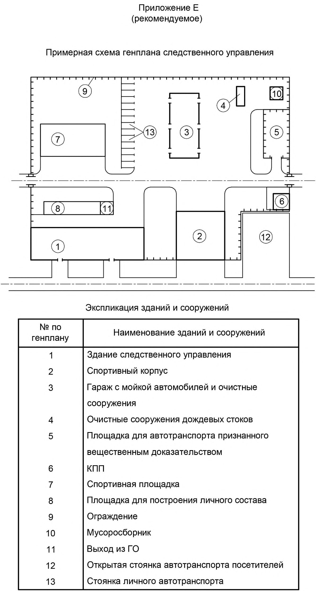
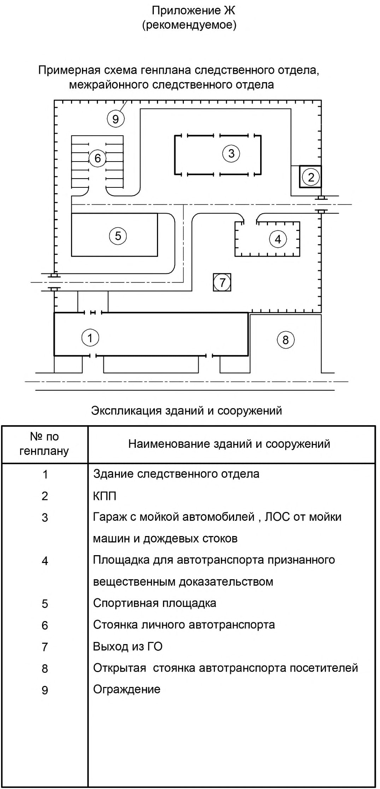
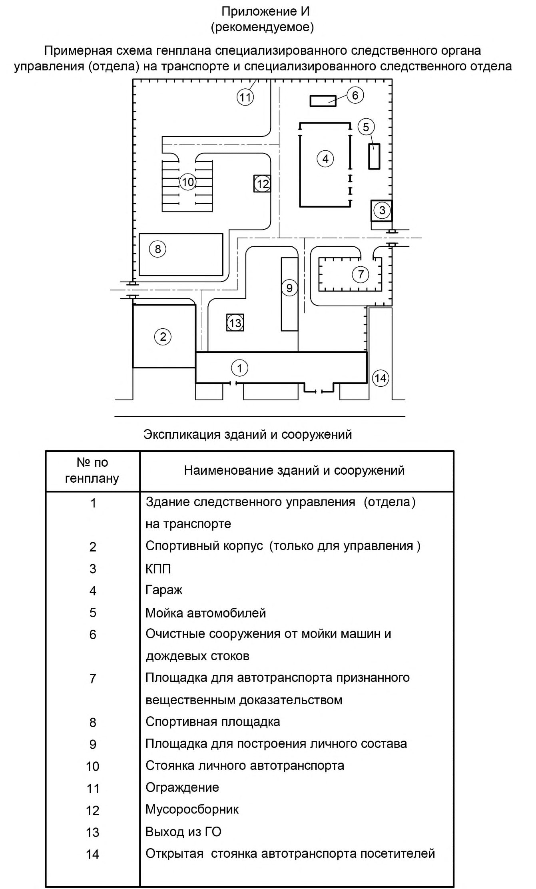
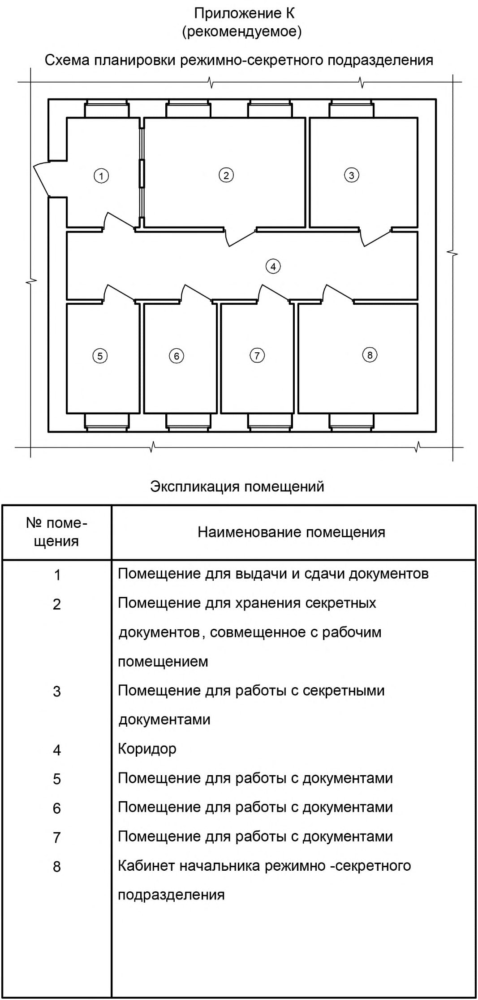
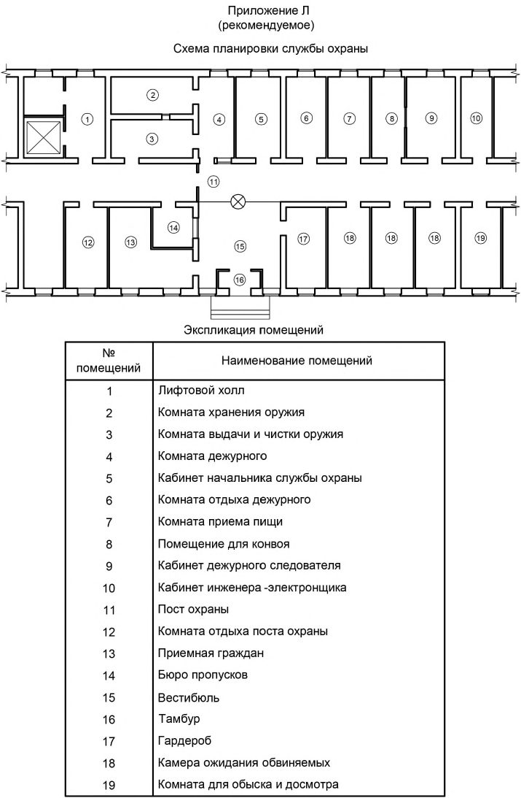
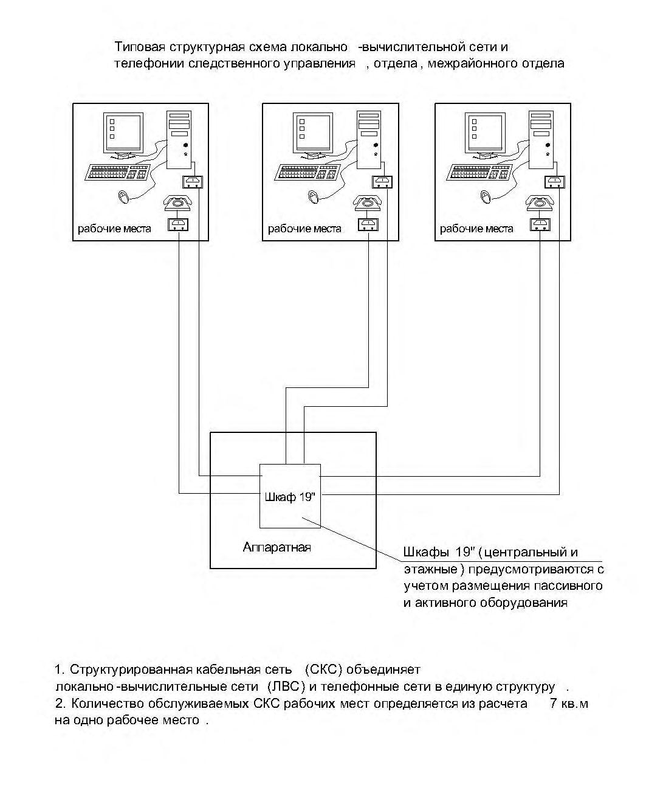

СП 228.1325800.2014 «Здания и сооружения следственных органов. Правила проектиро»
О документе: разработчики, утверждение, регистрация, ключевые слова
СВОД ПРАВИЛ
СП 228.1325800.2014
Издание официальное
- 1 ИСПОЛНИТЕЛЬ - Открытое акционерное общество «Специальный проектно-изыскательский институт»
- 2 ВНЕСЕН Техническим комитетом по стандартизации ТК 465 «Строительство»
- 3 СОГЛАСОВАН Министерством Российской Федерации по делам гражданской обороны, чрезвычайным ситуациям и ликвидации последствий стихийных бедствий (МЧС России) письмом от 19.02.2014 года № 19-2-12-662
- 4 ПОДГОТОВЛЕН к утверждению Департаментом градостроительной деятельности и архитектуры Министерства строительства и жилищно-коммунального хозяйства Российской Федерации (Минстрой России)
- 5 УТВЕРЖДЕН Приказом Министерства строительства и жилищно-коммунального хозяйства Российской Федерации от \_\_\_\_\_\_\_\_\_\_\_\_2014 г. № \_\_\_\_\_\_\_\_\_\_ и введен в действие с \_\_\_\_\_\_\_\_\_\_\_\_\_\_ г.
- 6 ЗАРЕГИСТРИРОВАН Федеральным агентством по техническому регулированию и метрологии (Росстандарт)
7 ВВЕДЕН ВПЕРВЫЕ
Информация об изменениях к настоящему своду правил , а также тексты изменений и поправок размещаются в информационной системе общего пользования - на официальном сайте Министерства по строительству и жилищно-коммунальному хозяйству Российской Федерации в сети Интернет
Настоящий свод правил не может быть полностью или частично воспроизведен, тиражирован и распространен в качестве официального издания на территории Российской Федерации без разрешения Следственного комитета Российской Федерации и Минстроя России
Дата введения - 2014-00-00
УДК :006.354 ОКС 01.040.93
Ключевые слова: здания следственных органов, административная, общественная и служебная зоны, доступность территории, режим и безопасность, защита от незаконных действий, функциональные группы помещений, показатели вместимости и площади помещений зданий, режимно-секретные помещения, архитектурные, конструктивные специальные решения, инженерные системы
\_\_\_\_\_\_\_\_\_\_\_\_\_\_\_\_\_\_\_\_\_\_\_\_\_\_\_\_\_\_\_\_\_\_\_\_\_\_\_\_\_\_\_\_\_\_\_\_\_\_\_\_\_\_\_\_\_\_\_\_\_\_\_\_\_\_\_\_\_\_\_\_\_\_\_\_\_
| Руководитель организации-разработчика ОАО «Специальный проектно- изыскательский институт Генеральный директор | В.М. Савченков |
|---|---|
| Руководитель разработки главный инженер проектов | С.А. Тикунов |
| Исполнитель главный специалист | В.К. Игнатьев |
Введение
Настоящий свод правил разработан по заказу Следственного комитета Российской Федерации на основании Постановления Правительства Российской Федерации от 19,11.2008 г. № 858 «О порядке разработки и утверждения свода правил».
Свод правил содержит и развивает положения, дополняющие СП 118.13330.2012 «Общественные здания и сооружения» и СП 44.13330.2011 «Административные и бытовые здания». Он предназначен для проектирования, строительства и реконструкции зданий и сооружений следственных органов Следственного комитета Российской Федерации.
В основу разработки нормативного документа положены Федеральный закон № 403ФЗ от 28.12.2010 г. «О Следственном комитете Российской Федерации»[8] и Указ Президента Российской Федерации от 14.01.2011 г. № 38 «Вопросы деятельности Следственного комитета Российской Федерации».
При подготовке настоящего свода правил использованы «Методические рекомендации по проектированию зданий прокуратур». МДС 31-3.2000 [14].
В разработке свода правил принимали участие:
Руководитель разработки, ответственный исполнитель С.А.Тикунов; инж. В.К.Игнатьев; инж. И.Б.Слинько; инж. Т.В.Мосолова; архит. И.Б.Украинская; инж. Т.К.Гребенник (ОАО «Специальный проектно-изыскательский институт»).
Исполняющий обязанности руководителя Управления капитального строительства Главного управления обеспечения деятельности Следственного комитета Российской Федерации А.С.Белоклоков; при участии А.А.Проскуры заместителя руководителя ОКС Управления капитального строительства Главного управления обеспечения деятельности Следственного комитета Российской Федерации.
1Область применения
2Нормативные ссылки
В настоящем Своде правил использованы ссылки на следующие нормативные документы:
ГОСТ 30494-2011 Здания жилые и общественные. Параметры микроклимата в помещениях
ГОСТ Р 51136-2008 Стекла защитные многослойные. Общие технические условия
СП 2.13130.2012 «Системы противопожарной защиты. Обеспечение огнестойкости объектов защиты»
СП 3.13130.2009 «Системы противопожарной защиты. Система оповещения и управления эвакуацией людей при пожаре. Требования пожарной безопасности»
СП 4.13130.2013 «Системы противопожарной защиты. Ограничение распространения пожара на объектах защиты. Требования к объемно-планировочным и конструктивным решениям»
СП 5.13130.2013 «Системы противопожарной защиты. Установки пожарной сигнализации и пожаротушения автоматические. Нормы и правила проектирования»
СП 6.13130.2013 «Системы противопожарной защиты. Электрооборудование. Требования пожарной безопасности»
СП 7.13130.2013 «Отопление, вентиляция и кондиционирование. Требования пожарной безопасности»
СП 30.13330.2012 «СНиП 2.04.01-85* Внутренний водопровод и канализация зданий»
СП 31.13330.2012 «СНиП 2.04.02-84* Водоснабжение. Наружные сети и сооружения»
СП 32.13330.2012 «СНиП 2.04.03-85 Канализация. Наружные сети и сооружения»
СП 42.13330.2011 «СНиП 2.07.01-89* Градостроительство. Планировка и застройка городских и сельских поселений»
СП 44.13330.2011 «СНиП 2.09.04-87* Административные и бытовые здания»
СП 50.13330.2012 «СНиП 23-02-2003 Тепловая защита зданий»
\_\_\_\_\_\_\_\_\_\_\_\_\_\_\_\_\_\_\_\_\_\_\_\_\_\_\_\_\_\_\_\_\_\_\_\_\_\_\_\_\_\_\_\_\_\_\_\_\_\_\_\_\_\_\_\_\_\_\_\_\_\_\_\_\_\_\_\_\_\_\_\_\_\_
ЗДАНИЯ И СООРУЖЕНИЙ СЛЕДСТВЕННЫХ ОРГАНОВ. ПРАВИЛА ПРОЕКТИРОВАНИЯ
Buildings and structures of the investigative bodies. Rules of architectures design
\_\_\_\_\_\_\_\_\_\_\_\_\_\_\_\_\_\_\_\_\_\_\_\_\_\_\_\_\_\_\_\_\_\_\_\_\_\_\_\_\_\_\_\_\_\_\_\_\_\_\_\_\_\_\_\_\_\_\_\_\_\_\_\_\_\_\_\_\_\_
СП 51.13330.2011 «СНиП 23-03-2003 Защита от шума»
- СП 59.13330.2012 «СНиП 35-01-2001 Доступность зданий и сооружений для маломобильных групп населения»
СП 60.13330.2012 «СНиП 41-01-2003 Отопление, вентиляция и кондиционирование воздуха».
СП 76.13330.2011 «СНиП 3.05.06-85 Электротехнические устройства»
СП 88.13330.2014 «СНиП II-11-77* Защитные сооружения гражданской обороны»
СП 118.13330.2012 «СНиП 31-06-2009 Общественные здания и сооружения»
- СП 131.13330.2012 «СНиП 23-01-99* Строительная климатология»
- СП 132.13330.2011 «Обеспечение антитеррористической защищенности зданий и сооружений. Общие требования проектирования»
СП 138.13330.2012 «Общественные здания и сооружения, доступные маломобильным группам населения. Правила проектирования»
СанПиН 2.2.1/2.1.1.1278-03 «Гигиенические требования к естественному, искусственному и совмещенному освещению жилых и общественных зданий»
Примечание - При пользовании настоящим сводом правил целесообразно проверить действие ссылочных стандартов (сводов правил и/или классификаторов) в информационной системе общего пользования на официальном сайте национального органа Российской Федерации по стандартизации в сети Интернет или по ежегодно издаваемому информационному указателю «Национальные стандарты», который опубликован по состоянию на 1 января текущего года, и по выпускам ежемесячно издаваемого информационного указателя «Национальные стандарты» за текущий год. Если заменен ссылочный стандарт (документ), на который дана недатированная ссылка, то рекомендуется использовать действующую версию этого стандарта (документа) с учетом всех внесенных в данную версию изменений. Если заменен ссылочный стандарт (документ), на который дана датированная ссылка, то рекомендуется использовать версию этого стандарта (документа) с указанным выше годом утверждения (принятия). Если после утверждения настоящего стандарта в ссылочный стандарт (документ), на который дана датированная ссылка, внесено изменение, затрагивающее положение, на которое дана ссылка, то это положение рекомендуется применять без учета данного изменения. Если ссылочный стандарт (документ) отменен без замены, то положение, в котором дана ссылка на него, рекомендуется применять в части, не затрагивающей эту ссылку. Сведения о действии сводов правил можно проверить в Федеральном информационном фонде технических регламентов и стандартов.
3Термины и определения
В настоящем cводе правил, применены термины по СП 118.13330, а также использованы следующие термины с соответствующими определениями:
- 3.1следственный комитет
- Следственный комитет Российской Федерации. 3.2 следственные органы:
- главное управление
- Следственный орган республики, края и области, следственный орган города федерального значения, автономного округа;
- управление
- Следственный орган в области с районным делением, городе, специализированный (кроме военных), специализированный на транспорте, межрегиональный;
- отдел и отделение
- Следственный орган (отдел района города, межрайонный отдел, специализированный (кроме военных) отдел, специализированный отдел на транспорте, отделения).
- 3.3режимно-секретное помещение
- Помещение для хранения носителей сведений, составляющих государственную тайну и работы с ними.
- 3.4камера ожидания обвиняемых
- Помещение при дежурной службе в административном здании для ожидания обвиняемых, вызванных для проведения следственных и иных процессуальных действий.
- 3.5камерная дверь
- Входная дверь в камере ожидания обвиняемых.
- 3.6посетители
- Лица, не являющиеся участниками судопроизводства, свидетели.
- 3.7камера хранения вещественных доказательств
- Помещение для хранения вещественных доказательств, сведений, составляющих государственную тайну, а также денег и материальных ценностей.
- 3.8помещение криминалистической и специальной техники
- Экспертно-криминалистический кабинет, лаборатория, комната для отстрела огнестрельного оружия, помещение для проведения опознания в условиях, исключающих визуальное наблюдение.
4Общие требования
При проектировании вновь возводимых зданий, реконструкции, капитальном ремонте, расширении, техническом перевооружении зданий, помещений и сооружений, предназначенных для размещения следственных органов Следственного комитета необходимо руководствоваться [2], [4], [6], [8].
При проектировании необходимо учитывать требования СП 88.13330.
5Требования к земельным участкам и размещению зданий
Расстояния между зданиями следственных органов и другими зданиями и сооружениями следует принимать по СП 4.13130 и СП 42.13330.
Минимальное расстояние между зданиями следственных органов и другими зданиями и сооружениями следует принимать по СП 4.13130 и СП 42.13330.
Здания и помещения специализированных следственных органов на транспорте следует располагать, как правило, вблизи, на территории или непосредственно в железнодорожных вокзалах, морских, речных вокзалах, аэровокзалах.
Не допускается размещать помещения следственных органов во встроеннопристроенных блоках к жилым, общественным и административным зданиям.
Для главных управлений, управлений следует предусматривать склад для хранения вещевого имущества, форменного обмундирования и технического имущества, как правило, в отдельно стоящем здании.
Размеры служебной зоны должны обеспечивать свободный проезд и маневрирование специальных транспортных средств для доставки лиц, содержащихся под стражей на проведение следственных и иных процессуальных действий.
6Требования к объёмно-планировочным и специальным конструктивным решениям
К помещениям частично доступным для посетителей допуска следует относить: кабинеты следователей, кабинет дежурного следователя, учебные классы, тренажерные залы с раздевальными и душевыми, комнаты психологической разгрузки.
К помещениям, закрытым для посетителей следует относить: помещения службы охраны, комнату хранения и чистки оружия, следственно-вспомогательные помещения, камеры для обвиняемых, комнату обыска и досмотра обвиняемых, экспертнокриминалистические помещения, камеру хранения вещественных доказательств, режимносекретные помещения, помещения функциональных служб и служб делопроизводства.
Планировочные решения рабочего места поста должны исключать возможность визуального контроля и обстрела постового с улицы.
Примерная схема планировки расположения помещений службы охраны приведена в приложении Л.
Для осуществления визуального контроля за проведением следственных действий и иных процессуальных действий с несовершеннолетними (малолетними) лицами в перегородке между комнатами следует предусматривать устройство оконного проёма габаритами не менее 1,0 × 2,0 м с заполнением стеклом с односторонней проницаемостью.
Планировочное решение комнаты для хранения оружия, как правило, должно исключать возможность просмотра и обстрела её двери из вестибюля основного входа.
- 380 мм - из полнотелого кирпича;
- 400 мм - из бетона;
- 200 мм - из железобетона.
В существующих зданиях, подлежащих реконструкции, стены и перегородки, выполненные из полнотелого кирпича, бетона и железобетона при снижении нормативных значений толщины стен не более чем на 30% следует укреплять сварной сеткой из арматуры диаметром 10 мм с ячейками размерами 100×100 мм.
Планировочные решения боксов должны обеспечивать размещение в них подвижной криминалистической лаборатории, оборудованной на базе микроавтобуса и транспортных средства любого типа без прицепных устройств.
7Требования режима и безопасности. Защита от незаконных действий
К ограждению не должны примыкать какие-либо пристройки, кроме объектов, являющихся составной частью периметра.
Решётки следует оборудовать замками. Диаметр прутьев стальных решёток должен быть не менее 15 мм. Расстояние между вертикальными прутьями должно быть не менее 0,15 м, между горизонтальными - не более 0,4 м. В качестве горизонтальных элементов решётки допускается применять стальную полосу шириной не менее 15 мм и толщиной не менее 3 мм. Решётки не должны препятствовать открыванию окон (фрамуг, форточек) для проветривания помещений.
Вместо решеток разрешается установка на окна защитных многослойных стекол по ГОСТ Р 51136.
Внутренние двери усиленной конструкции, как правило, выполняют на металлическом каркасе с обшивкой его с двух сторон металлическим листом толщиной не менее 2 мм с заполнением пустот звукоизоляционным материалом. Толщина внутренних дверей должна быть не менее 40 мм. Размеры дверного полотна определяются в зависимости от функциональных требований.
Камерные двери следует навешивать с левой стороны относительно входов в камеры, они должны открываться в сторону коридора, закрываться камерными замками специального типа и дополнительным быстродействующим запорным устройством.
Угол открывания дверного полотна должен устанавливать ограничитель (упор в полу, цепочка поверху дверей, доводчик с фиксатором и т.п.) из расчёта одновременного выхода из камеры не более одного человека, при этом необходимо предусматривать возможность полного открывания дверей.
Размер полотен камерных дверей - 1,9×0,9 м.
Входная дверь должна быть оборудована приспособлением для опечатывания.
При проектировании режимно-секретных помещений следует соблюдать требования типовых норм и правил [11].
Низ оконных проемов камер ожидания обвиняемых должен быть на высоте не менее 1,6 м от уровня пола. В оконных проемах камер вместо подоконников устраивают откосы с закругленными углами. Остекление выполняют из пулестойкого защитного многослойного стекла. Со стороны камер оконные стекла защищают металлической сеткой, обеспечивающей доступ естественного освещения и возможность открывания форточки.
Наружные металлические решетки следует выполнять из круглой стали диаметром не менее 12 мм и поперечных стальных полос сечением не менее 60×5 мм. Ячейки решеток должны быть размерами 70×200 мм. Анкеры для крепления решеток следует заделывать в стену не менее чем на 150 мм.
8Санитарно-технические устройства
Водоснабжение и канализация
Отопление, внутреннее теплоснабжение, вентиляция и кондиционирование
- взрыво- и пожаробезопасность систем вентиляции и кондиционирования;
- нормируемые микроклимат и концентрацию вредных веществ в воздухе рабочей зоны мастерских, серверных, АТС, лабораторных, складских и общественных помещений;
- нормируемые уровни шума и вибрации при работе вентиляционного оборудования;
- очистку вентиляционных выбросов от вредных веществ;
- ремонтопригодность механизмов вентиляции и кондиционирования;
- воздухообмен в помещениях.
Расчетную температуру воздуха и кратность воздухообмена в помещениях следует принимать по таблице 1.
Таблица 1
| Температура воздуха в помещениях в | Кратность воздухообмена в 1 ч | Кратность воздухообмена в 1 ч | Примечание | |
|---|---|---|---|---|
| Наименование помещения | холодный период года, °С | приток воздуха | удаление воздуха | |
| 1 Помещение для проведения следственных и иных процессу- альных действий с несовершен- нолетними (малолетними) лицами | 20 | 2,5 | 2,5 | - |
| 2 Помещение для хранения носителей сведений, составляющих государственную тайну и работы с ними | 18 | 2 но не менее 60 м³/ч на 1 чел | 2 но не менее 60 м³/ч на 1 чел | - |
| 3 Камера хранения вещественных доказательств | 16 | - | 1 | - |
| 4 Комната хранения оружия и боеприпасов | 18 | 1 | 1 | Вентиляция через комнату чистки оружия, через окно выдачи оружия |
| 5 Комната для чистки оружия | 18 | 8 | 10 |
Окончание таблицы 1
| 6 Лаборатории | 6 Лаборатории | 6 Лаборатории | 6 Лаборатории |
|---|---|---|---|
| Физико-химические исследований | 22 | По расчёту компенсации объёма удаляемого воздуха местной вытяжкой, но не менее | - |
| 5 | 6 | |||
|---|---|---|---|---|
| Исследований документов | 18 | 2 | 3 | |
| Баллистических и трассологичес- ких исследования, дактилоскопические исследований | 18 | По расчёту согласно заданию на проектирование, но не менее 2 3 | По расчёту согласно заданию на проектирование, но не менее 2 3 | - |
| 7 Камеры для обвиняемых | 18 | 20 м³/ч на 1 чел | 20 м³/ч на 1 чел | Без постоянного пребывания |
| 8 Комната (тир) для экспериментального отстрела оружия | 18 | По расчёту в соответствии с технологическим заданием, но не менее 8 10 | По расчёту в соответствии с технологическим заданием, но не менее 8 10 | - |
9Электротехнические устройства
При проектировании электроснабжения, электрооборудования и электроосвещения зданий следственных органов следует руководствоваться документами [12], [18], СП 6.13130, СП 52.13330, СП 76.13330, [13] и [16].
Для электроснабжения электроприёмников 1-ой (особой) категории необходимо предусматривать третий независимый источник питания (дизель-генераторы, источники бесперебойного питания и т.п.). К 1-й (особой) категории надёжности электроснабжения следует относить:
- охранно-тревожную сигнализацию;
- пожарную сигнализацию;
- охранное видеонаблюдение;
- электроприёмники и аварийное освещение дежурной службы, экспертно-криминалистических лабораторий;
- автоматическое пожаротушение;
- аварийное электроосвещение.
10Слаботочные устройства
- внутреннюю локально-вычислительную сеть с выходом в Интернет. Специальные требования по оборудованию локально-вычислительной сети выходом в Интернет устанавливают в задании на проектирование;
- телефонную сеть (городскую, административно-хозяйственную, диспетчерскую);
- часофикацию;
- громкоговорящую диспетчерскую связь и оповещение;
- радиосвязь УКВ;
- городскую радиотрансляционную сеть;
- систему коллективного приема телевидения;
- охранно-тревожную сигнализацию;
- автоматическую пожарную сигнализацию;
- автоматическое пожаротушение;
- охранное видеонаблюдение (периметр территории и зданий);
- систему контроля и управления доступом;
- контроль (мониторинг) и управление инженерными системами зданий и сооружений (диспетчеризацию);
В специализированных следственных органах на транспорте, кроме того, через приемно-передающие устройства УКВ-радиосвязи следует предусматривать прием и передачу информации от магистральной, дорожной, поездной громкоговорящей оперативно-диспетчерской связи.
Помещения второго и последующих этажей оборудуют охранной сигнализацией исходя из возможности проникновения в них посторонних лиц через пожарные лестницы, навесы, водостоки, пристройки и другие наружные конструкции.
Комнату хранения оружия, помещения криминалистической техники, специальной связи, режимно-секретные помещения, камеру хранения вещественных доказательств, помещение для хранения материальных ценностей, кассу, блокируют средствами охранной сигнализации не менее, чем в два рубежа.
Все рубежи подключают на пульт централизованного наблюдения подразделения вневедомственной охраны. В случае невозможности по техническим причинам подключения помещений под централизованную охрану, их оборудуют автономной сигнализацией с установкой звуковых и световых сигнализаторов вблизи поста охраны.
Кроме того, для исключения несанкционированного прохода в административное здание посторонних лиц, все наружные входы следует оборудовать видеодомофонами с дистанционным управлением дверных замков с пульта поста охраны.
Кроме того, на фасадах зданий, опорах освещения следует устанавливать телевизионные камеры для визуального просмотра общественной и служебной зон, подходов и подъездов к административному зданию.
Приемно-контрольные устройства следует размещать в комнате дежурного.
Операторскую комнату оборудуют системой фиксации, обработки и хранения видеои аудио информации, полученной при проведении следственных действий с несовершеннолетними.
Должна быть исключена возможность включения в локальную сеть и выхода в Интернет компьютеров, содержащих секретную информацию.
АПриложение А (обязательное). Структура следственных органов Следственного комитета
Структуру следственных органов Следственного комитета строят по административно-территориальному принципу [8]. В систему Следственного комитета входят:
- центральный аппарат Следственного комитета;
- главные следственные управления и следственные управления Следственного комитета по субъектам Российской Федерации (в том числе их подразделения по административным округам), специализированные следственные управления (кроме военных), специализированные следственные управления (в том числе на транспорте железнодорожном, воздушном, морском и речном), следственные управления и следственные отделы Следственного комитета;
- следственные отделы, межрайонные следственные отделы и следственные отделения Следственного комитета по районам, городам, специализированные следственные отделы (кроме военных), специализированные (в том числе на транспорте железнодорожном, воздушном, морском и речном) следственные подразделения Следственного комитета.
В системе Следственного комитета находятся образовательные организации, а также иные организации, необходимые для обеспечения его деятельности.
БПриложение Б. (рекомендуемое)
Расчётные показатели площади земельных участков для размещения следственных органов
Для предварительных расчётов минимальные размеры земельных участков (без учета земельных участков для организации стоянок личного транспорта посетителей) для строительства комплекса следственных органов с различной численностью сотрудников должны быть не менее приведенных в таблицах Б.1 и Б.2.
Таблица Б.1
| Наименование объекта | Минимальные площади земельных участков, га, на комплекс при численности работающих, чел | Минимальные площади земельных участков, га, на комплекс при численности работающих, чел | Минимальные площади земельных участков, га, на комплекс при численности работающих, чел | Минимальные площади земельных участков, га, на комплекс при численности работающих, чел | Минимальные площади земельных участков, га, на комплекс при численности работающих, чел | Минимальные площади земельных участков, га, на комплекс при численности работающих, чел |
|---|---|---|---|---|---|---|
| до 10 | от 11 до 30 | от 31 до 50 | от 51 до100 | от 101 до 150 | 151 и более | |
| Комплекс зданий следственных органов | от 0,25 до 0,29 | от 0,3 до 0,49 | от 0,5 до 0,79 | от 0,8 до 1,19 | от 1,2 до 1,5 | 1,51 и более |
Таблица Б.2
| Наименование объекта | Минимальные площади земельных участков, га, на комплекс при численности работающих, чел | Минимальные площади земельных участков, га, на комплекс при численности работающих, чел | Минимальные площади земельных участков, га, на комплекс при численности работающих, чел | Минимальные площади земельных участков, га, на комплекс при численности работающих, чел | Минимальные площади земельных участков, га, на комплекс при численности работающих, чел |
|---|---|---|---|---|---|
| до 10 | от 11 до 50 | от 51 до 75 | от 76 до 100 | 101 и более | |
| Комплекс зданий специализиро- ванных следственных органов на транспорте, специализированных отделов | от 0,35 до 0,39 | от 0,4 до 0,69 | от 0,7 до 0,99 | от 1,0 до 1,39 | 1,40 и более |
ВПриложение В (рекомендуемое). Показатели штатной численности и вместимости зданий следственных органов
Численность аппарата следственных органов следует принимать в соответствии приведенным в таблице В.1.
Таблица В.1
| Наименование органа | Численность аппарата, чел |
|---|---|
| Главные управления в краях, республиках, городах | от 100 до 150, более 150 |
| Управления в краях, областях с районным делением | от 30 до 50, от 51 до 100 |
| Межрайонные отделы в городах без районного деления, районах, районах в городах | от 5 до 10, от 11 до 30 |
| Отделы (отделения) города (района) | от 5 до 30 |
Численность аппарата специализированных следственных органов, следует принимать в соответствии с приведенным в таблице В.2.
Таблица В.2
| Наименование органа | Наименование органа | Численность аппарата, чел |
|---|---|---|
| Управления, управления | межрегиональные | от 30 до 50 от 51 до 70 |
| Отделы | от 5 до 30 | |
| Отделения | до 5 |
ГПриложение Г (рекомендуемое). Состав и площади помещений зданий следственных органов по краям, республикам, областям и автономным округам, городских, районных и межрайонных следственных органов
Таблица Г.1
| Наименование помещения | Площадь, м², при численности работающих, чел | Площадь, м², при численности работающих, чел | Площадь, м², при численности работающих, чел | Площадь, м², при численности работающих, чел | Площадь, м², при численности работающих, чел | Площадь, м², при численности работающих, чел |
|---|---|---|---|---|---|---|
| Наименование помещения | до 10 | от 11 до 30 | от 31 до 50 | от 51 до 100 | от 101 до150 | 151 и более |
| РУКОВОДСТВО | ||||||
| 1 Кабинет руководителя с комнатой отдыха | - | - | 32+8 =40 | 36+10 =46 | 48+12 =60 | 54+14 =68 |
| 2 Приемная | - | - | 14 | 16 | 18 | 24 |
| 3 Кабинет первого заместителя руководителя с комнатой отдыха | - | - | 20 | 22+6 =28 | 26+8 =34 | 30+10 =40 |
| 4 Приемная | - | - | 12 | 12 | 14 | 16 |
| 5 Кабинет заместителя руководителя | - | - | 16 | 18 | 20 | 24 |
| 6 Кабинет старшего помощника руководителя (по взаимодействию со средствами массовой информации) | - | - | 16 | 18 | 20 | 24 |
| 7 Кабинет старшего помощни- ка руководителя (по вопросам собственной безопасности) | - | - | 16 | 18 | 20 | 24 |
| 8 Кабинет старшего помощника руководителя (по организационным вопросам и контролю исполнения) | - | - | 16 | 18 | 20 | 24 |
| 9 Кабинет старшего инспектора (по защите государственной тайны и мобилизационной работе) | - | - | 14 | 16 | 18 | 20 |
| ПЕРВОЕ УПРАВЛЕНИЕ ПО РАССЛЕДОВАНИЮ ОСОБО ВАЖНЫХДЕЛ(о преступлениях против личности и общественной безопасности) | ПЕРВОЕ УПРАВЛЕНИЕ ПО РАССЛЕДОВАНИЮ ОСОБО ВАЖНЫХДЕЛ(о преступлениях против личности и общественной безопасности) | ПЕРВОЕ УПРАВЛЕНИЕ ПО РАССЛЕДОВАНИЮ ОСОБО ВАЖНЫХДЕЛ(о преступлениях против личности и общественной безопасности) | ПЕРВОЕ УПРАВЛЕНИЕ ПО РАССЛЕДОВАНИЮ ОСОБО ВАЖНЫХДЕЛ(о преступлениях против личности и общественной безопасности) | ПЕРВОЕ УПРАВЛЕНИЕ ПО РАССЛЕДОВАНИЮ ОСОБО ВАЖНЫХДЕЛ(о преступлениях против личности и общественной безопасности) | ПЕРВОЕ УПРАВЛЕНИЕ ПО РАССЛЕДОВАНИЮ ОСОБО ВАЖНЫХДЕЛ(о преступлениях против личности и общественной безопасности) | ПЕРВОЕ УПРАВЛЕНИЕ ПО РАССЛЕДОВАНИЮ ОСОБО ВАЖНЫХДЕЛ(о преступлениях против личности и общественной безопасности) |
| 10 Кабинет руководителя управления | - | - | - | - | 26 | 30 |
| ПЕРВЫЙ ОТДЕЛ ПО РАССЛЕДОВАНИЮ ОСОБО ВАЖНЫХДЕЛ (о преступлениях против личности и общественной безопасности) | ПЕРВЫЙ ОТДЕЛ ПО РАССЛЕДОВАНИЮ ОСОБО ВАЖНЫХДЕЛ (о преступлениях против личности и общественной безопасности) | ПЕРВЫЙ ОТДЕЛ ПО РАССЛЕДОВАНИЮ ОСОБО ВАЖНЫХДЕЛ (о преступлениях против личности и общественной безопасности) | ПЕРВЫЙ ОТДЕЛ ПО РАССЛЕДОВАНИЮ ОСОБО ВАЖНЫХДЕЛ (о преступлениях против личности и общественной безопасности) | ПЕРВЫЙ ОТДЕЛ ПО РАССЛЕДОВАНИЮ ОСОБО ВАЖНЫХДЕЛ (о преступлениях против личности и общественной безопасности) | ПЕРВЫЙ ОТДЕЛ ПО РАССЛЕДОВАНИЮ ОСОБО ВАЖНЫХДЕЛ (о преступлениях против личности и общественной безопасности) | ПЕРВЫЙ ОТДЕЛ ПО РАССЛЕДОВАНИЮ ОСОБО ВАЖНЫХДЕЛ (о преступлениях против личности и общественной безопасности) |
Продолжение таблицы Г.1
| Наименование помещения | Площадь, м², при численности работающих, чел | Площадь, м², при численности работающих, чел | Площадь, м², при численности работающих, чел | Площадь, м², при численности работающих, чел | Площадь, м², при численности работающих, чел | Площадь, м², при численности работающих, чел |
|---|---|---|---|---|---|---|
| Наименование помещения | до 10 | от 11 до 30 | от 31 до 50 | от 51 до 100 | от 101 до150 | 151 и более |
| 11 Кабинет руководителя отдела | - | - | 16 | 18 | 20 | 24 |
| 12 Кабинет заместителя руководителя отдела | - | - | 12 | 12 | 14 | 16 |
| 13 Кабинет следователя по особо важным делам | - | - | 12 | 12 | 14 | 14 |
| 14 Комната помощника следователя | - | - | 12 | 12 | 12 | 12 |
| ВТОРОЕ УПРАВЛЕНИЕ ПО РАССЛЕДОВАНИЮ ОСОБОВАЖНЫХ ДЕЛ (о преступлениях против государственной власти в сфере экономики) | ВТОРОЕ УПРАВЛЕНИЕ ПО РАССЛЕДОВАНИЮ ОСОБОВАЖНЫХ ДЕЛ (о преступлениях против государственной власти в сфере экономики) | ВТОРОЕ УПРАВЛЕНИЕ ПО РАССЛЕДОВАНИЮ ОСОБОВАЖНЫХ ДЕЛ (о преступлениях против государственной власти в сфере экономики) | ВТОРОЕ УПРАВЛЕНИЕ ПО РАССЛЕДОВАНИЮ ОСОБОВАЖНЫХ ДЕЛ (о преступлениях против государственной власти в сфере экономики) | ВТОРОЕ УПРАВЛЕНИЕ ПО РАССЛЕДОВАНИЮ ОСОБОВАЖНЫХ ДЕЛ (о преступлениях против государственной власти в сфере экономики) | ВТОРОЕ УПРАВЛЕНИЕ ПО РАССЛЕДОВАНИЮ ОСОБОВАЖНЫХ ДЕЛ (о преступлениях против государственной власти в сфере экономики) | ВТОРОЕ УПРАВЛЕНИЕ ПО РАССЛЕДОВАНИЮ ОСОБОВАЖНЫХ ДЕЛ (о преступлениях против государственной власти в сфере экономики) |
| 15 Кабинет руководителя управления | - | - | - | - | 26 | 30 |
| ВТОРОЙ ОТДЕЛ ПО РАССЛЕДОВАНИЮ ОСОБОВАЖНЫХ ДЕЛ (о преступлениях против государственной власти в сфере экономики) | ВТОРОЙ ОТДЕЛ ПО РАССЛЕДОВАНИЮ ОСОБОВАЖНЫХ ДЕЛ (о преступлениях против государственной власти в сфере экономики) | ВТОРОЙ ОТДЕЛ ПО РАССЛЕДОВАНИЮ ОСОБОВАЖНЫХ ДЕЛ (о преступлениях против государственной власти в сфере экономики) | ВТОРОЙ ОТДЕЛ ПО РАССЛЕДОВАНИЮ ОСОБОВАЖНЫХ ДЕЛ (о преступлениях против государственной власти в сфере экономики) | ВТОРОЙ ОТДЕЛ ПО РАССЛЕДОВАНИЮ ОСОБОВАЖНЫХ ДЕЛ (о преступлениях против государственной власти в сфере экономики) | ВТОРОЙ ОТДЕЛ ПО РАССЛЕДОВАНИЮ ОСОБОВАЖНЫХ ДЕЛ (о преступлениях против государственной власти в сфере экономики) | ВТОРОЙ ОТДЕЛ ПО РАССЛЕДОВАНИЮ ОСОБОВАЖНЫХ ДЕЛ (о преступлениях против государственной власти в сфере экономики) |
| 16 Кабинет руководителя отдела | - | - | - | 18 | 20 | 24 |
| 17 Кабинет заместителя руководителя отдела | - | - | - | 12 | 14 | 16 |
| 18 Кабинет следователя по особо важным делам | - | - | - | 12 | 14 | 14 |
| 19 Кабинет старшего следователя | - | - | - | 12 | 12 | 12 |
| 20 Комната помощника следователя | - | - | - | 12 | 12 | 12 |
| ОТДЕЛ ПРОЦЕССУАЛЬНОГО КОНТРОЛЯ | ОТДЕЛ ПРОЦЕССУАЛЬНОГО КОНТРОЛЯ | ОТДЕЛ ПРОЦЕССУАЛЬНОГО КОНТРОЛЯ | ОТДЕЛ ПРОЦЕССУАЛЬНОГО КОНТРОЛЯ | ОТДЕЛ ПРОЦЕССУАЛЬНОГО КОНТРОЛЯ | ОТДЕЛ ПРОЦЕССУАЛЬНОГО КОНТРОЛЯ | ОТДЕЛ ПРОЦЕССУАЛЬНОГО КОНТРОЛЯ |
| 21 Кабинет руководителя отдела | - | - | 14 | 18 | 20 | 24 |
| 22 Кабинет заместителя руководителя отдела | - | - | 12 | 12 | 14 | 16 |
| 23 Комната инспекторов | - | - | 12 | 12 | 12 | 12 |
| РЕЖИМНО-СЕКРЕТНОЕ ПОДРАЗДЕЛЕНИЕ | РЕЖИМНО-СЕКРЕТНОЕ ПОДРАЗДЕЛЕНИЕ | РЕЖИМНО-СЕКРЕТНОЕ ПОДРАЗДЕЛЕНИЕ | РЕЖИМНО-СЕКРЕТНОЕ ПОДРАЗДЕЛЕНИЕ | РЕЖИМНО-СЕКРЕТНОЕ ПОДРАЗДЕЛЕНИЕ | РЕЖИМНО-СЕКРЕТНОЕ ПОДРАЗДЕЛЕНИЕ | РЕЖИМНО-СЕКРЕТНОЕ ПОДРАЗДЕЛЕНИЕ |
| 24 Кабинет руководителя | - | - | 12 | 12 | 14 | 16 |
| 25 Комната для хранения секретных документов | 10 | 10 | 12 | 16 | 20 | 24 |
| 26 Комната для работы с секретными документами | 8 | 8 | 10 | 10 | 12 | 16 |
| 27 Комната для работы со средствами криптографической защиты | 8 | 8 | 10 | 14 | 2х10 | 3х10 |
| 28 Помещение секретного архива и библиотеки | 10 | 10 | 12 | 14 | 18 | 20 |
| 29 Комната для хранения секретных документов архива и библиотеки | 10 | 10 | 12 | 16 | 20 | 24 |
Продолжение таблицы Г.1
| Наименование помещения | Площадь, м², при численности работающих, чел | Площадь, м², при численности работающих, чел | Площадь, м², при численности работающих, чел | Площадь, м², при численности работающих, чел | Площадь, м², при численности работающих, чел | Площадь, м², при численности работающих, чел |
|---|---|---|---|---|---|---|
| до 10 | от 11 до 30 | от 31 до 50 | от 51 до 100 | от 101 до150 | 151 и более | |
| 30 Комната выдачи и приема секретных документов | 4 | 4 | 4 | 4 | 6 | 6 |
| 31 Помещение для хранения категорированных системных блоков ПЭВМ | 1 на | один | системный | блок | ||
| СЛУЖБА ОХРАНЫ | ||||||
| 32 Вестибюль | 20 | 20 | 24 | 32 | 40 | 42 |
| 33 Гардероб | 0,1 | м² на один крючок, но не менее 6 | м² на один крючок, но не менее 6 | м² на один крючок, но не менее 6 | м² на один крючок, но не менее 6 | м² на один крючок, но не менее 6 |
| 34 Контрольно-пропускной пост (помещение или бокс) | 4 | 4 | 6 | 6 | 8 | 8 |
| 35 Комната отдыха поста | - | - | - | 6 | 6 | 6 |
| 36 Приемная граждан | - | 12 | 14 | 18 | 20 | 24 |
| - бюро пропусков | 8 | 8 | 10 | 10 | 10 | 12 |
| 37 Кабинет начальника охраны | - | 12 | 12 | 12 | 16 | 16 |
| 38 Комната дежурного | 10 | 10 | 12 | 12 | 14 | 16 |
| 39 Кабинет дежурного следователя | - | 12 | 12 | 12 | 16 | 18 |
| 40 Помещение для конвоя | - | 12 | 12 | 12 | 18 | 18 |
| 41 Помещение для наблюдения | - | 6 | 6 | 6 | 8 | 8 |
| 42 Помещение для обыска и досмотра | - | 10 | 10 | 10 | 2 х 10 | 3 х 10 |
| 43 Камера для обвиняемых | - | 3х10 | 3 х 10 | 3 х 10 | 3 х 10 | 3 х 10 |
| 44 Комната дежурной следственной группы выезда на место происшествия с помещением для хранения криминалистической техники | - | 12+12 | ||||
| процессуальных действий с несовершеннолетними (малолетними) лицами: - комната для проведения следственных действий | 10 | 10 | 10 | 12 | 15 | 15 |
| - операторская комната | 10 | 10 | 10 | 12 | 12 | 12 |
| 46 Подразделение физической защиты | - | - | - | 14 | 16 | 22 |
| 47 Подразделение специальной связи | - | - | 10 | 14 | 14 | 16 |
| 48 Аппаратная | 14 | 18 | 12 | 14 | 16 | 22 |
| 49 Серверная | - | - | 12 | 14 | 16 | 22 |
| 50 Комната для хранения оружия и боеприпасов | - | 10 | 12 | 14 | 16 | 18 |
Продолжение таблицы Г.1
| Наименование помещения | Площадь, м², при численности работающих, чел | Площадь, м², при численности работающих, чел | Площадь, м², при численности работающих, чел | Площадь, м², при численности работающих, чел | Площадь, м², при численности работающих, чел | Площадь, м², при численности работающих, чел |
|---|---|---|---|---|---|---|
| Наименование помещения | до 10 | от 11 до 30 | от 31 до 50 | от 51 до 100 | от 101 до150 | 151 и более |
| 51 Комната для чистки оружия | - | 6 | 8 | 8 | 10 | 10 |
| 52 Комната инженера- электронщика | - | 12 | 12 | 12 | 12 | 12 |
| 53 Комната дежурной смены | - | 12 | 12 | 14 | 14 | 16 |
| 54 Комната отдыха дежурной смены | - | 12 | 12 | 14 | 14 | 16 |
| 55 Комната для подогрева и приема пищи | - | 10 | 12 | 12 | 12 | 14 |
| 56 Уборная | 1 унитаз, 1 умывальник в шлюзе | 1 унитаз, 1 умывальник в шлюзе | 1 унитаз, 1 умывальник в шлюзе | 1 унитаз, 1 умывальник в шлюзе | 1 унитаз, 1 умывальник в шлюзе | 1 унитаз, 1 умывальник в шлюзе |
| ОТДЕЛ КРИМИНАЛИСТИКИ | ||||||
| 57 Кабинет руководителя отдела | - | - | 14 | 18 | 20 | 24 |
| 58 Кабинет заместителя руководителя отдела | - | - | 12 | 12 | 14 | 16 |
| 59 Кабинет старшего следователя-криминалиста | - | - | 12 | 12 | 14 | 14 |
| 60 Комната старшего инспектора | - | - | 12 | 12 | 12 | 14 |
| 61 Комната старшего эксперта | - | - | 12 | 12 | 12 | 12 |
| 62 Комната экспертов | - | - | 12 | 12 | 12 | 12 |
| 63 Комната следователя | - | - | 12 | 12 | 12 | 12 |
| 64 Кабинет криминалистики | - | - | 14 | 16 | 20 | 24 |
| 65 Криминалистический учебный полигон | - | - | 14 | 16 | 20 | 22 |
| 66 Помещение для проведения опознания в условиях, исключающих визуальное наблюдение | - | - | 10 | 10 | 12 | 12 |
| 67 Отдел по внедрению криминалистической и специальной техники | - | - | 10 | 10 | 12 | 12 |
| 68 Отдел судебно- экономических исследований | - | - | 10 | 10 | 12 | 12 |
| 69 Камера хранения вещественных доказательств: | ||||||
| - по делам, находящимся в производстве | - | - | 10 | 10 | 12 | 14 |
| - по делам, приостановленным или прекращенным производством | - | - | 10 | 12 | 16 | 20 |
| - наркотических и психотропных веществ | - | - | 6 | 6 | 8 | 8 |
| - помещение для просушивания вещественных доказательств | - | - | 6 | 6 | 8 | 8 |
Продолжение таблицы Г.1
| Наименование помещения | Площадь, м², при численности работающих, чел | Площадь, м², при численности работающих, чел | Площадь, м², при численности работающих, чел | Площадь, м², при численности работающих, чел | Площадь, м², при численности работающих, чел | Площадь, м², при численности работающих, чел |
|---|---|---|---|---|---|---|
| Наименование помещения | до 10 | от 11 до 30 | от 31 до 50 | от 51 до 100 | от 101 до150 | 151 и более |
| 70 Комната секретаря- делопроизводителя | - | - | 10 | 12 | 12 | 12 |
| 71 Комната диктофонного центра | - | - | 10 | 12 | 12 | 12 |
| 72 Комната для свидетелей | - | - | 12 | 2х10 | 2х12 | 2х12 |
| 73 Комната сотрудников организационно-методического направления работ | - | - | - | 14 | 16 | 20 |
| 74 Комната для работы с по- терпевшими при составлении композиционного портрета | - | - | 10 | 14 | 20 | 22 |
| - комната приёма потерпевших | - | - | 10 | 14 | 14 | 16 |
| Экспертные лаборатории: | ||||||
| 75 Фотолаборатория: | ||||||
| - съемочный павильон | - | - | 20 | 30 | 30 | 30 |
| - оперативная фотография | - | - | 12 | 12 | 15 | 15 |
| - цветная фотография | - | - | 10 | 15 | 20 | 20 |
| 76 Баллистические и трассологические исследования: | ||||||
| - лаборатория | - | - | 10 | 10 | 14 | 20 |
| - комната (тир) для экспериментального отстрела огнестрельного оружия (в подвале) | - | - | 20 | 30 | 40 | 40 |
| 77 Дактилоскопические исследования: | ||||||
| - лаборатория | - | - | 12 | 15 | 20 | 25 |
| - помещение дактилоскопических учётов | - | - | 10 | 10 | 14 | 20 |
| - серверная | - | - | 10 | 10 | 12 | 12 |
| 78 Портретные исследования: - лаборатория | - | - | 10 | 12 | 15 | 20 |
| 79 Почерковедческие и технико- криминалистические исследования документов: | ||||||
| - лаборатория | - | - | 12 | 12 | 18 | 20 |
| - картотека | - | - | 8 | 8 | 10 | 12 |
| 80 Компьютерно и видеотехнические исследования: | ||||||
| серверная | - | - | 10 | 10 | 12 | 15 |
| - комната для осмотра и подготовки объектов исследования | - | - | 10 | 10 | 15 | 20 |
| - комната для хранения вещественных доказательств | - | - | 15 | 20 | 25 | 30 |
Продолжение таблицы Г.1
| Наименование помещения | Площадь, м², при численности работающих, чел | Площадь, м², при численности работающих, чел | Площадь, м², при численности работающих, чел | Площадь, м², при численности работающих, чел | Площадь, м², при численности работающих, чел | Площадь, м², при численности работающих, чел |
|---|---|---|---|---|---|---|
| до 10 | от 11 до 30 | от 31 до 50 | от 51 до 100 | от 101 до150 | 151 и более | |
| 81 Инженерно-технические исследования: | ||||||
| - комната для осмотра и подготовки объектов исследования | - | - | 8 | 8 | 10 | 15 |
| - лаборатория электронной микроскопии | - | - | 10 | 12 | 15 | 20 |
| - лаборатория электротехнических и теплофизических исследований | - | - | 8 | 10 | 12 | 20 |
| - лаборатория пожарно- технических полевых методов испытаний | - | - | 8 | 8 | 12 | 20 |
| - лаборатория строительно- технических полевых методов испытаний | - | - | 8 | 8 | 12 | 20 |
| - комната для хранения вещественных | - | - | 8 | 8 | 12 | 20 |
| доказательств 82 Физико-химические исследования (КЭМВИ): - лаборатория газовой | - | - | - | 12 | 20 | 25 |
| хроматографии - лаборатория молекулярного спектрального анализа и оптической микроскопии | - | - | - | 10 | 15 | 25 |
| - лаборатория эмиссионно- спектрального анализа | - | - | - | 10 | 15 | 25 |
| - лаборатория рентгеновской спектрометрии | - | - | - | 10 | 15 | 25 |
| - лаборатория жидкостной хроматографии | - | - | - | 8 | 12 | 20 |
| - комната для осмотра и подготовки объектов исследования | - | - | - | 10 | 15 | 25 |
| - комната хранения натуральных коллекций и образцов наркотических средств и психотропных веществ | - | - | - | 8 | 10 | 15 |
| - комната для хранения вещественных доказательств | - | - | - | 8 | 10 | 20 |
| 83 Медико-биологические исследования: |
Продолжение таблицы Г.1
| Наименование помещения | Площадь, м², при численности работающих, чел | Площадь, м², при численности работающих, чел | Площадь, м², при численности работающих, чел | Площадь, м², при численности работающих, чел | Площадь, м², при численности работающих, чел | Площадь, м², при численности работающих, чел |
|---|---|---|---|---|---|---|
| Наименование помещения | до 10 | от 11 до 30 | от 31 до 50 | от 51 до 100 | от 101 до150 | 151 и более |
| 84 Лаборатория для работы со следовыми количествами ДНК: | ||||||
| - комната для осмотра вещественных доказательств | - | - | - | 10 | 20 | 30 |
| - помещение для работы с химическими веществами, дистиляторная | - | - | - | 12 | 20 | 30 |
| - помещение для выделения ДНК | - | - | - | 18 | 20 | 30 |
| - помещение для сбора ПЦР-смеси | - | - | - | 8 | 10 | 20 |
| - помещение для проведения ПЦР | - | - | - | 8 | 10 | 20 |
| - помещение для детекции и анализа амплифицированых фрагментов | - | - | - | 8 | 10 | 20 |
| - техническое помещение | - | - | - | 8 | 10 | 15 |
| 85 Лаборатория для работы с биологическими образцами, содержащими большое количество ДНК: | ||||||
| - комната для осмотра вещественных доказательств | - | - | 8 | 8 | 10 | 20 |
| - помещение для работы с химическими веществами, дистиляторная | - | - | - | 12 | 20 | 24 |
| - помещение для выделения ДНК | - | - | - | 18 | 20 | 24 |
| - помещение для сбора ПЦР-смеси | - | - | - | 8 | 10 | 20 |
| - помещение для проведения ПЦР | - | - | - | 8 | 10 | 20 |
| - помещение для детекции и анализа амплифицированых фрагментов | - | - | - | 10 | 20 | 30 |
| - техническое помещение | - | - | - | 8 | 10 | 20 |
| 86 Лаборатория для хранения вещественных доказательств и ведения базы данных: | ||||||
| - комната для проведения обучающих занятий | - | - | - | 14 | 20 | 30 |
| - архивная | - | - | - | 8 | 10 | 20 |
| - помещение для ведения базы данных | - | - | - | 8 | 10 | 20 |
| - серверная для ведения ДНК-базы | - | - | - | 6 | 6 | 10 |
Продолжение таблицы Г.1
| Наименование помещения | Площадь, м², при численности работающих, чел | Площадь, м², при численности работающих, чел | Площадь, м², при численности работающих, чел | Площадь, м², при численности работающих, чел | Площадь, м², при численности работающих, чел | Площадь, м², при численности работающих, чел |
|---|---|---|---|---|---|---|
| Наименование помещения | до 10 | от 11 до 30 | от 31 до 50 | от 51 до 100 | от 101 до150 | 151 и более |
| - помещение для хранения базы данных | - | - | - | 8 | 10 | 20 |
| - кельвинаторная | - | - | - | 10 | 15 | 20 |
| - техническое помещение | - | - | - | 6 | 6 | 10 |
| 87 Медико-криминалистическая лаборатория: | ||||||
| - комната для подготовки объектов для исследования | - | - | 10 | 10 | 20 | 30 |
| - помещение для восстановления попилярных узоров | - | - | 8 | 10 | 20 | 30 |
| - помещение для восстановления лица по черепу | - | - | 8 | 10 | 20 | 30 |
| - комната хранения объектов исследования | - | - | 10 | 10 | 20 | 30 |
| - техническое помещение | - | - | 6 | 6 | 6 | 8 |
| 88 Лаборатория психофизиологических исследований: | ||||||
| - помещение для обследования | - | - | 12 | 12 | 12 | 18 |
| - помещение для наблюдения | - | - | 10 | 10 | 10 | 16 |
| ОРГАНИЗАЦИОННО-КОНТРОЛЬНОЕ ОТДЕЛЕНИЕ | ОРГАНИЗАЦИОННО-КОНТРОЛЬНОЕ ОТДЕЛЕНИЕ | ОРГАНИЗАЦИОННО-КОНТРОЛЬНОЕ ОТДЕЛЕНИЕ | ОРГАНИЗАЦИОННО-КОНТРОЛЬНОЕ ОТДЕЛЕНИЕ | ОРГАНИЗАЦИОННО-КОНТРОЛЬНОЕ ОТДЕЛЕНИЕ | ОРГАНИЗАЦИОННО-КОНТРОЛЬНОЕ ОТДЕЛЕНИЕ | ОРГАНИЗАЦИОННО-КОНТРОЛЬНОЕ ОТДЕЛЕНИЕ |
| 89 Кабинет руководителя отделения | - | - | 14 | 16 | 18 | 20 |
| 90 Комната старшего инспектора | - | - | 12 | 12 | 12 | 12 |
| 91 Комната инспекторов | - | - | 12 | 12 | 12 | 12 |
| Служба по гражданской обороне 92 Комната старшего инспектора | - | - | - | - | 12 | 12 |
| 93 Комната инспектора | - | - | 12 | 12 | 12 | 12 |
| Группа госпожнадзора | Группа госпожнадзора | Группа госпожнадзора | Группа госпожнадзора | Группа госпожнадзора | Группа госпожнадзора | Группа госпожнадзора |
| 94 Комната старшего инспектора | - | - | - | - | 12 | 12 |
| 95 Комната инспектора | - | - | 12 | 12 | 12 | 12 |
| ОТДЕЛ КАДРОВ | ОТДЕЛ КАДРОВ | ОТДЕЛ КАДРОВ | ОТДЕЛ КАДРОВ | ОТДЕЛ КАДРОВ | ОТДЕЛ КАДРОВ | ОТДЕЛ КАДРОВ |
| 96 Кабинет руководителя отдела | - | - | 14 | 18 | 20 | 24 |
| 97 Комната инспекторов | - | - | 12 | 12 | 12 | 12 |
| 98 Комната психолога | - | - | 12 | 12 | 12 | 12 |
| 99 Комната для хранения личных дел и картотечного учёта | - | - | 12 | 12 | 12 | 12 |
| - помещение для хранения пенсионных дел | - | - | - | - | 10 | 12 |
Продолжение таблицы Г.1
| Наименование помещения | Площадь, м², при численности работающих, чел | Площадь, м², при численности работающих, чел | Площадь, м², при численности работающих, чел | Площадь, м², при численности работающих, чел | Площадь, м², при численности работающих, чел | Площадь, м², при численности работающих, чел |
|---|---|---|---|---|---|---|
| Наименование помещения | до 10 | от 11 до 30 | от 31 до 50 | от 51 до 100 | от 101 до150 | 151 и более |
| ОТДЕЛ ПО ПРИЕМУ ГРАЖДАН И ДОКУМЕНТАЦИОННОМУ ОБЕСПЕЧЕНИЮ | ОТДЕЛ ПО ПРИЕМУ ГРАЖДАН И ДОКУМЕНТАЦИОННОМУ ОБЕСПЕЧЕНИЮ | ОТДЕЛ ПО ПРИЕМУ ГРАЖДАН И ДОКУМЕНТАЦИОННОМУ ОБЕСПЕЧЕНИЮ | ОТДЕЛ ПО ПРИЕМУ ГРАЖДАН И ДОКУМЕНТАЦИОННОМУ ОБЕСПЕЧЕНИЮ | ОТДЕЛ ПО ПРИЕМУ ГРАЖДАН И ДОКУМЕНТАЦИОННОМУ ОБЕСПЕЧЕНИЮ | ОТДЕЛ ПО ПРИЕМУ ГРАЖДАН И ДОКУМЕНТАЦИОННОМУ ОБЕСПЕЧЕНИЮ | ОТДЕЛ ПО ПРИЕМУ ГРАЖДАН И ДОКУМЕНТАЦИОННОМУ ОБЕСПЕЧЕНИЮ |
| 100 Кабинет руководителя отдела | - | - | 14 | 18 | 20 | 24 |
| 101 Кабинет заместителя руководителя отдела | - | - | 12 | 12 | 14 | 16 |
| 102 Комната инспекторов | - | - | 10 | 2х10= 20 | 3х10= 30 | 4х10= 40 |
| 103 Комната старшего инспектора | - | - | 8 | 10 | 10 | 12 |
| 104 Комната старшего инспектора-делопроизводителя | - | - | 8 | 10 | 10 | 12 |
| ФИНАНСОВО-ЭКОНОМИЧЕСКИЙ ОТДЕЛ | ФИНАНСОВО-ЭКОНОМИЧЕСКИЙ ОТДЕЛ | ФИНАНСОВО-ЭКОНОМИЧЕСКИЙ ОТДЕЛ | ФИНАНСОВО-ЭКОНОМИЧЕСКИЙ ОТДЕЛ | ФИНАНСОВО-ЭКОНОМИЧЕСКИЙ ОТДЕЛ | ФИНАНСОВО-ЭКОНОМИЧЕСКИЙ ОТДЕЛ | ФИНАНСОВО-ЭКОНОМИЧЕСКИЙ ОТДЕЛ |
| 105 Кабинет руководителя отдела | - | - | 14 | 18 | 20 | 24 |
| 106 Кабинет заместителя руководителя отдела | - | - | 12 | 14 | 14 | 16 |
| 107 Комната бухгалтеров | - | - | 12 | 12 | 12 | 12 |
| 108 Комната казначея | - | - | 8 | 8 | 8 | 8 |
| 109 Помещение кассы | - | - | 4 | 4 | 6 | 6 |
| 110 Комната инспекторов | - | - | 10 | 2х10= 20 | 3х10= 30 | 5х10= 50 |
| 111 Комната старшего инспектора | - | - | 10 | 2х10= 20 | 2х10= 20 | 3х10= 30 |
| ОТДЕЛ МАТЕРИАЛЬНО-ТЕХНИЧЕСКОГО ОБЕСПЕЧЕНИЯ | ОТДЕЛ МАТЕРИАЛЬНО-ТЕХНИЧЕСКОГО ОБЕСПЕЧЕНИЯ | ОТДЕЛ МАТЕРИАЛЬНО-ТЕХНИЧЕСКОГО ОБЕСПЕЧЕНИЯ | ОТДЕЛ МАТЕРИАЛЬНО-ТЕХНИЧЕСКОГО ОБЕСПЕЧЕНИЯ | ОТДЕЛ МАТЕРИАЛЬНО-ТЕХНИЧЕСКОГО ОБЕСПЕЧЕНИЯ | ОТДЕЛ МАТЕРИАЛЬНО-ТЕХНИЧЕСКОГО ОБЕСПЕЧЕНИЯ | ОТДЕЛ МАТЕРИАЛЬНО-ТЕХНИЧЕСКОГО ОБЕСПЕЧЕНИЯ |
| 112 Кабинет руководителя отдела | - | - | 14 | 18 | 20 | 24 |
| 113 Кабинет заместителя руководителя отдела | - | - | 12 | 12 | 14 | 16 |
| 114 Комната инспекторов- специалистов | - | - | 10 | 3х6=1 8 | 4х6=2 4 | 6х6=3 6 |
| 115 Кабинет старшего инспектора | - | - | - | 12 | 2х12= 24 | 3х12= 36 |
| Техническое отделение | Техническое отделение | Техническое отделение | Техническое отделение | Техническое отделение | Техническое отделение | Техническое отделение |
| 116 Кабинет начальника отделения | - | - | 12 | 12 | 16 | 16 |
| 117 Кабинет старшего инженера оперативной связи и специальной техники | - | - | - | - | 12 | 12 |
| 118 Комната инженеров оперативной связи и специальной техники | - | - | - | 12 | 12 | 12 |
| 119 Операторская для работы с видеозаписями | - | - | 12 | 12 | 14 | 14 |
Продолжение таблицы Г.1
| Наименование помещения | Площадь, м², при численности работающих, чел | Площадь, м², при численности работающих, чел | Площадь, м², при численности работающих, чел | Площадь, м², при численности работающих, чел | Площадь, м², при численности работающих, чел | Площадь, м², при численности работающих, чел |
|---|---|---|---|---|---|---|
| Наименование помещения | до 10 | от 11 до 30 | от 31 до 50 | от 51 до 100 | от 101 до150 | 151 и более |
| 120 Помещение множительной техники и сканирования документов | 10 | 10 | 10 | 12 | 14 | 16 |
| 121 Помещение оперативной полиграфии | - | - | - | - | 14 | 14 |
| 122 Мастерская по ремонту оргтехники | - | - | 12 | 12 | 12 | 12 |
| 123 Электромеханическая мастерская | - | - | - | 12 | 12 | 12 |
| 124 Столярная мастерская | - | - | - | 14 | 18 | 18 |
| 125 Слесарная мастерская | - | - | - | 12 | 15 | 15 |
| 126 Мастерская по ремонту средств связи, сигнализации и оперативной техники | - | - | 12 | 12 | 12 | 12 |
| 127 Помещение для хранения материальных ценностей (складское помещение) | - | - | 24 | 36 | 42 | 48 |
| Группа обеспечения и обслуживания | Группа обеспечения и обслуживания | Группа обеспечения и обслуживания | Группа обеспечения и обслуживания | Группа обеспечения и обслуживания | Группа обеспечения и обслуживания | Группа обеспечения и обслуживания |
| 128 Помещение для водителей | - | 10 | 12 | 14 | 18 | 18 |
| 129 Комната отдыха и приёма пищи водителей | 12 | 12 | 14 | 16 | 18 | 20 |
| 130 Комната инспектора по автотранспорту (размещается в гараже) | - | - | 12 | 12 | 12 | 12 |
| Здравпункт | Здравпункт | Здравпункт | Здравпункт | Здравпункт | Здравпункт | Здравпункт |
| 131 Кабинет врача | - | - | - | 12 | 12 | 12 |
| 132 Кабинет фельдшера | - | - | 12 | 12 | 12 | 12 |
| 133 Процедурная | - | - | 10 | 10 | 10 | 10 |
| СЛЕДСТВЕННЫЕ ОТДЕЛЫ: СЛЕДСТВЕННЫЙ ОТДЕЛ ПО РАЙОНУ ГОРОДА | СЛЕДСТВЕННЫЕ ОТДЕЛЫ: СЛЕДСТВЕННЫЙ ОТДЕЛ ПО РАЙОНУ ГОРОДА | СЛЕДСТВЕННЫЕ ОТДЕЛЫ: СЛЕДСТВЕННЫЙ ОТДЕЛ ПО РАЙОНУ ГОРОДА | СЛЕДСТВЕННЫЕ ОТДЕЛЫ: СЛЕДСТВЕННЫЙ ОТДЕЛ ПО РАЙОНУ ГОРОДА | СЛЕДСТВЕННЫЕ ОТДЕЛЫ: СЛЕДСТВЕННЫЙ ОТДЕЛ ПО РАЙОНУ ГОРОДА | СЛЕДСТВЕННЫЕ ОТДЕЛЫ: СЛЕДСТВЕННЫЙ ОТДЕЛ ПО РАЙОНУ ГОРОДА | СЛЕДСТВЕННЫЕ ОТДЕЛЫ: СЛЕДСТВЕННЫЙ ОТДЕЛ ПО РАЙОНУ ГОРОДА |
| 134 Кабинет руководителя отдела | 14 | 16 | - | - | - | - |
| 135 Кабинет заместителя руководителя отдела | 12 | 14 | - | - | - | - |
| 136 Кабинет старшего помощника руководителя отдела | 12 | 14 | - | - | - | - |
| 137 Кабинет помощника руководителя отдела | 12 | 12 | - | - | - | - |
| 138 Кабинет следователя по особо важным делам | 12 | 14 | - | - | - | - |
| 139 Кабинет старшего следователя | 12 | 12 | - | - | - | - |
| 140 Кабинет следователя | 12 | 12 | - | - | - | - |
| 141 Комната помощника следователя | 12 | 12 | - | - | - | - |
| МЕЖРАЙОННЫЙ СЛЕДСТВЕННЫЙ ОТДЕЛ | МЕЖРАЙОННЫЙ СЛЕДСТВЕННЫЙ ОТДЕЛ | МЕЖРАЙОННЫЙ СЛЕДСТВЕННЫЙ ОТДЕЛ | МЕЖРАЙОННЫЙ СЛЕДСТВЕННЫЙ ОТДЕЛ | МЕЖРАЙОННЫЙ СЛЕДСТВЕННЫЙ ОТДЕЛ | МЕЖРАЙОННЫЙ СЛЕДСТВЕННЫЙ ОТДЕЛ | МЕЖРАЙОННЫЙ СЛЕДСТВЕННЫЙ ОТДЕЛ |
| 142 Кабинет руководителя отдела | 14 | 16 | - | - | - | - |
Продолжение таблицы Г.1
| Наименование помещения | Площадь, м², при численности работающих, чел | Площадь, м², при численности работающих, чел | Площадь, м², при численности работающих, чел | Площадь, м², при численности работающих, чел | Площадь, м², при численности работающих, чел | Площадь, м², при численности работающих, чел |
|---|---|---|---|---|---|---|
| Наименование помещения | до 10 | от 11 до 30 | от 31 до 50 | от 51 до 100 | от 101 до150 | 151 и более |
| 143 Кабинет заместителя руководителя отдела | 12 | 14 | - | - | - | - |
| 144 Кабинет следователя по особо важным делам | 12 | 14 | - | - | - | - |
| 145 Кабинет старшего следователя | 12 | 12 | - | - | - | - |
| 146 Кабинет следователя | 12 | 12 | - | - | - | - |
| 147 Комната помощника следователя | 12 | 12 | - | - | - | - |
| ПОДРАЗДЕЛЕНИЯ, ПОДЧИНЯЮЩИЕСЯ НЕПОСРЕДСТВЕННО РУКОВОДИТЕЛЮ СЛЕДСТВЕННОГО ОРГАНА | ПОДРАЗДЕЛЕНИЯ, ПОДЧИНЯЮЩИЕСЯ НЕПОСРЕДСТВЕННО РУКОВОДИТЕЛЮ СЛЕДСТВЕННОГО ОРГАНА | ПОДРАЗДЕЛЕНИЯ, ПОДЧИНЯЮЩИЕСЯ НЕПОСРЕДСТВЕННО РУКОВОДИТЕЛЮ СЛЕДСТВЕННОГО ОРГАНА | ПОДРАЗДЕЛЕНИЯ, ПОДЧИНЯЮЩИЕСЯ НЕПОСРЕДСТВЕННО РУКОВОДИТЕЛЮ СЛЕДСТВЕННОГО ОРГАНА | ПОДРАЗДЕЛЕНИЯ, ПОДЧИНЯЮЩИЕСЯ НЕПОСРЕДСТВЕННО РУКОВОДИТЕЛЮ СЛЕДСТВЕННОГО ОРГАНА | ПОДРАЗДЕЛЕНИЯ, ПОДЧИНЯЮЩИЕСЯ НЕПОСРЕДСТВЕННО РУКОВОДИТЕЛЮ СЛЕДСТВЕННОГО ОРГАНА | ПОДРАЗДЕЛЕНИЯ, ПОДЧИНЯЮЩИЕСЯ НЕПОСРЕДСТВЕННО РУКОВОДИТЕЛЮ СЛЕДСТВЕННОГО ОРГАНА |
| Юридическая группа | ||||||
| 148 Кабинет старшего юрисконсульта | - | - | - | 12 | 12 | 12 |
| 149 Комната юрисконсульта | - | - | 12 | 12 | 12 | 12 |
| Секретариат | ||||||
| 150 Помещение для обработки входящей и исходящей корреспонденции | - | - | 12 | 14 | 16 | 16 |
| 151 Комната секретарей- машинисток | - | - | 10 | 12 | 16 | 16 |
| ПОМЕЩЕНИЯ ВСПОМОГАТЕЛЬНОГО, ОБСЛУЖИВАЮЩЕГО И ТЕХНИЧЕСКОГО НАЗНАЧЕНИЯ | ПОМЕЩЕНИЯ ВСПОМОГАТЕЛЬНОГО, ОБСЛУЖИВАЮЩЕГО И ТЕХНИЧЕСКОГО НАЗНАЧЕНИЯ | ПОМЕЩЕНИЯ ВСПОМОГАТЕЛЬНОГО, ОБСЛУЖИВАЮЩЕГО И ТЕХНИЧЕСКОГО НАЗНАЧЕНИЯ | ПОМЕЩЕНИЯ ВСПОМОГАТЕЛЬНОГО, ОБСЛУЖИВАЮЩЕГО И ТЕХНИЧЕСКОГО НАЗНАЧЕНИЯ | ПОМЕЩЕНИЯ ВСПОМОГАТЕЛЬНОГО, ОБСЛУЖИВАЮЩЕГО И ТЕХНИЧЕСКОГО НАЗНАЧЕНИЯ | ПОМЕЩЕНИЯ ВСПОМОГАТЕЛЬНОГО, ОБСЛУЖИВАЮЩЕГО И ТЕХНИЧЕСКОГО НАЗНАЧЕНИЯ | ПОМЕЩЕНИЯ ВСПОМОГАТЕЛЬНОГО, ОБСЛУЖИВАЮЩЕГО И ТЕХНИЧЕСКОГО НАЗНАЧЕНИЯ |
| 152 Конференц-зал | - | 24 | 45 | 90 | 135 | 180 |
| 153 Кулуары (холл) при конференц-зале | - | 8 | 8 | 18 | 28 | 36 |
| 154 Зал рабочих совещаний | - | 14 | 24 | 30 | 36 | 40 |
| 155 Тренажёрный зал | 14 | 14 | 24 | 30 | 36 | 36 |
| 156 Комната психологической разгрузки | - | - | 24 | 30 | 36 | 36 |
| 157 Раздевальные с душевыми при тренажёрном зале | - | - | 2х10 | 2х10 | 2х12 | 2х12 |
| 158 Учебный класс | - | - | 24 | 30 | 36 | 40 |
| 159 Библиотека личного состава | - | - | 12 | 14 | 16 | 22 |
| 160 Зал истории предвари- тельного следствия | - | - | 16 | 20 | 24 | 30 |
| 161 Архив | 8 | 10 | 14 | 16 | 20 | 24 |
| 162 Комната приёма пищи | 12 | 18 | - | - | - | - |
| 163 Буфет | - | - | 32 | 105 | - | - |
| 164 Столовая: | ||||||
| - холл для посетителей с умывальной | - | - | - | - | 16 | 18 |
| - обеденный зал с раздаточной | - | - | - | - | 56 | 70 |
Продолжение таблицы Г.1
| Наименование помещения | Площадь, м², при численности работающих, чел | Площадь, м², при численности работающих, чел | Площадь, м², при численности работающих, чел | Площадь, м², при численности работающих, чел | Площадь, м², при численности работающих, чел | Площадь, м², при численности работающих, чел |
|---|---|---|---|---|---|---|
| до 10 | от 11 до 30 | от 31 до 50 | от 51 до 100 | от 101 до150 | 151 и более | |
| - производственные и подсобные помещения | - | - | - | - | 110 | 120 |
Окончание таблицы Г.1
| 165 Кладовая расходных материалов и канцелярских принадлежностей | 8 | 10 | 15 | 24 | 32 | 40 |
|---|---|---|---|---|---|---|
| 166 Кладовая оборудования и инвентаря | 8 | 10 | 15 | 15 | 20 | 24 |
| 167 Комната АТС | - | - | 12 | 18 | 18 | 24 |
| 168 Помещение для блоков бесперебойного питания | 10 | 10 | 10 | 12 | 16 | 16 |
| 179 Кладовая уборочного инвентаря | На каждом этаже, 0,8 на 100 м² общей площади | На каждом этаже, 0,8 на 100 м² общей площади | На каждом этаже, 0,8 на 100 м² общей площади | На каждом этаже, 0,8 на 100 м² общей площади | На каждом этаже, 0,8 на 100 м² общей площади | На каждом этаже, 0,8 на 100 м² общей площади |
| 170 Уборные с умывальниками в тамбуре для сотрудников следственного органа | В соответствии с СП 118.13330 | В соответствии с СП 118.13330 | В соответствии с СП 118.13330 | В соответствии с СП 118.13330 | В соответствии с СП 118.13330 | В соответствии с СП 118.13330 |
| Всего рабочей площади | 384 | 654 | 1924 | 2788 | 3571 | 3858 |
Примечания :
- 1 Штатные должности старших помощников (помощников) руководителя управления и отдела с указанием направления их деятельности, а также сотрудников, государственных гражданских служащих и работников, включают в штат следственного управления только в случае отсутствия соответствующих структурных подразделений в аппарате следственного органа.
- 2 Значения площади кабинетов следователей, в том числе дежурного следователя, приведены из расчета одного рабочего места в помещении.
- 3 На всех этажах, как правило, следует предусматривать холлы для дополнительного освещения коридора и размещения граждан, ожидающих приёма.
- 4 Помещения для экспертных подразделений выделяют при наличии соответствующих экспертов в структуре следственного органа.
- 5 Значение площади технических помещений определяет расчётом.
- 6 Наличие и значения площади помещений резервной дизельной электростанции следует предусматривать исходя из технических условий электрических сетей.
ДПриложение Д (рекомендуемое). Состав и площади помещений зданий специализированных следственных органов
Таблица Д.1
| Наименование помещения | Площадь, м², при численности работающих, чел | Площадь, м², при численности работающих, чел | Площадь, м², при численности работающих, чел | Площадь, м², при численности работающих, чел | Площадь, м², при численности работающих, чел |
|---|---|---|---|---|---|
| от 5 | от 5 до 14 | от 15 до 29 | от 30 до 49 | 50 и более | |
| РУКОВОДСТВО | |||||
| 1 Кабинет руководителя с комнатой отдыха | 14 | 18 | 22+8= 30 | 30+10 =40 | 36+10 =46 |
| 2 Приемная | - | 12 | 18 | 18 | 24 |
| 3 Кабинет первого заместителя руководителя | - | 16 | 20 | 24 | 30 |
| 4 Кабинет заместителя руководителя по общим вопросам | 14 | 16 | 18 | 24 | 24 |
| 5 Кабинет заместителя руководителя | - | - | 18 | 24 | 24 |
| 6 Кабинет старшего помощника руководителя по взаимодействию со средствами массовой информации | - | - | 14 | 16 | 18 |
| 7 Кабинет старшего помощника руководителя по кадрам | - | - | 14 | 16 | 18 |
| 8 Кабинет помощника руководителя по кадрам | - | - | 14 | 14 | 18 |
| 9 Кабинет старшего помощника руководителя по вопросам собственной безопасности | - | - | 14 | 16 | 18 |
| 10 Кабинет старшего инспектора по защите государственной тайны и мобилизационной работе | - | - | 12 | 14 | 16 |
| РЕЖИМНО-СЕКРЕТНОЕ ПОДРАЗДЕЛЕНИЕ (РСП) | РЕЖИМНО-СЕКРЕТНОЕ ПОДРАЗДЕЛЕНИЕ (РСП) | РЕЖИМНО-СЕКРЕТНОЕ ПОДРАЗДЕЛЕНИЕ (РСП) | РЕЖИМНО-СЕКРЕТНОЕ ПОДРАЗДЕЛЕНИЕ (РСП) | РЕЖИМНО-СЕКРЕТНОЕ ПОДРАЗДЕЛЕНИЕ (РСП) | РЕЖИМНО-СЕКРЕТНОЕ ПОДРАЗДЕЛЕНИЕ (РСП) |
| 11 Кабинет руководителя РСП | - | - | 12 | 14 | 16 |
| 12 Комната для хранения секретных документов | - | 10 | 12 | 12 | 14 |
| 13 Комната для работы с секретными документами | - | 8 | 10 | 10 | 12 |
| 14 Комната для работы со средствами криптографической защиты | - | - | 14 | 2х10 | 3х10 |
| 15 Помещение для хранения категорированных системных блоков ПЭВМ | на один | системный | блок | ||
| 16 Помещение для выдачи и приема секретных документов | - | 5 | 5 | 5 | 5 |
| СЛУЖБА ОХРАНЫ | |||||
| 17 Вестибюль | - | 20 | 24 | 30 | 36 |
| 18 Приемная граждан | - | 10 | 12 | 14 | 16 |
| 19 Бюро пропусков | 8 | 10 | 12 | 14 | 16 |
| 20 Контрольно-пропускной пост | 4 | 4 | 6 | 6 | 8 |
| 21 Кабинет начальника охраны | - | 12 | 14 | 14 | 16 |
Продолжение таблицы Д.1
| Наименование помещения | Площадь, м², при численности работающих, чел | Площадь, м², при численности работающих, чел | Площадь, м², при численности работающих, чел | Площадь, м², при численности работающих, чел | Площадь, м², при численности работающих, чел |
|---|---|---|---|---|---|
| от 5 | от 5 до 14 | от 15 до 29 | от 30 до 49 | 50 и более | |
| 22 Комната дежурного с кабинами для радиосвязи, факсимильной связи | 10 | 10 | 12 | 14 | 16 |
| 23 Кабинет дежурного следователя | - | 12 | 14 | 14 | 16 |
| 24 Помещение конвоя | - | 12 | 12 | 18 | 18 |
| 25 Камера для обвиняемых | - | 3х10 | 3х10 | 3х10 | 3х10 |
| 26 Комната для обыска и досмотра обвиняемых | - | 10 | 10 | 12 | 14 |
| 27 Комната подразделения физической защиты | - | - | 12 | 14 | 16 |
| 28 Подразделение специальной связи | - | 8 | 10 | 14 | 16 |
| 29 Комната для хранения оружия и боеприпасов к нему | - | 12 | 14 | 16 | 20 |
| 30 Комната для чистки оружия | - | 10 | 14 | 14 | 16 |
| 31 Следственная группа выезда на место происшествия: | |||||
| -комната дежурной следственной группы | - | 10 | 12 | 12 | 12 |
| -помещение для хранения криминалистической техники | - | 10 | 10 | 12 | 12 |
| 32 Помещение для проведения следственных и иных процессуальных действий с несовершеннолетними (малолетними) лицами: | |||||
| - комната для проведения следственных действий | 10 | 10 | 12 | 15 | 15 |
| - операторская комната | 8 | 10 | 10 | 12 | 12 |
| 33 Кабинет инженера-электронщика | - | - | 12 | 12 | 12 |
| 34 Комната дежурной смены | - | 12 | 18 | 18 | 18 |
| 35 Комната отдыха дежурной смены | - | - | 18 | 18 | 18 |
| 36 Комната для подогрева и приема пищи | - | 10 | 12 | 12 | 16 |
| 37 Уборная с умывальником в шлюзе | 1 унитаз, 1 писсуар | 1 унитаз, 1 писсуар | 1 унитаз, 1 писсуар | 1 унитаз, 1 писсуар | 1 унитаз, 1 писсуар |
| ОТДЕЛ КРИМИНАЛИСТИКИ | |||||
| 38 Кабинет руководителя отдела | - | - | 14 | 14 | 14 |
| 39 Кабинет заместителя руководителя отдела | - | - | - | 12 | 12 |
| 40 Кабинет старшего следователя- криминалиста | - | - | 12 | 12 | 12 |
| 41 Кабинет старшего эксперта | - | 12 | 12 | 12 | 12 |
| 42 Учебный криминалистический полигон | - | - | 15 | 20 | 20 |
| 43 Кабинет криминалистики | - | 12 | 12 | 12 | 12 |
Продолжение таблицы Д.1
| Наименование помещения | Площадь, м², при численности | Площадь, м², при численности | Площадь, м², при численности | Площадь, м², при численности | Площадь, м², при численности |
|---|---|---|---|---|---|
| от 5 | от 5 до 14 | работающих, от 15 до 29 | чел от 30 до 49 | 50 и более | |
| 44 Помещение для проведения опознавания в условиях, исключающих визуальное наблюдение | - | - | 10 | 12 | 12 |
| 45 Отделение по внедрению криминалистической и специальной техники | - | - | 10 | 12 | 12 |
| 46 Отделение судебно- экономических исследований | - | - | 10 | 10 | 12 |
| 47 Помещение судебно- экономических исследований | - | - | 6 | 10 | 14 |
| 48 Камера хранения вещественных доказательств: | |||||
| -по делам, находящимся в производстве | - | - | 10 | 12 | 14 |
| -по делам, приостановленным или прекращенным производством | - | - | 10 | 12 | 16 |
| -наркотических и психотропных веществ | - | - | 6 | 6 | 8 |
| -помещение для просушивания вещественных доказательств | - | - | 6 | 6 | 8 |
| 49 Комната секретаря- делопроизводителя | - | 10 | 10 | 12 | 12 |
| 50 Комната диктофонного центра | - | - | 10 | 12 | 12 |
| 51 Комната для свидетелей | - | - | 12 | 2х10 | 2х12 |
| 52 Комната сотрудников организационно-методического направления | - | - | - | 14 | 16 |
| 53 Комната для работы с потерпевшими при составлении композиционного портрета | - | - | 10 | 14 | 20 |
| - комната приёма потерпевших | - | - | 10 | 12 | 14 |
| 54 Фотолаборатория | + | + | + | ||
| 55 Видеолаборатория | + | + | + | ||
| 56 Баллистические и трассологические исследования | + | + | + | ||
| 57 Дактилоскопические исследования | + | + | + | ||
| 58 Портретные исследования 59 Почерковедческие и технико- криминалистические исследования | + | + | + | ||
| документов 60 Компьютерно и видеотехнические | + | + | + + | ||
| исследования | + | + | |||
| 61 Инженерно-технические исследования | + | + | + |
Продолжение таблицы Д.1
| Наименование помещения | Площадь, м², при численности | Площадь, м², при численности | Площадь, м², при численности | Площадь, м², при численности | Площадь, м², при численности |
|---|---|---|---|---|---|
| от 5 | от 5 до 14 | от 15 до 29 | от 30 до 49 | 50 и более | |
| 62 Физико-химические исследования (КЭМВИ) | + | + | + | ||
| 63 Медико-биологические исследования | + | + | + | ||
| 64 Лаборатория для работы со следовыми количествами ДНК | + | + | + | ||
| 65 Лаборатория для работы с биологическими образцами, содержащими большое количество ДНК | + | + | + | ||
| 66 Лаборатория для хранения вещественных доказательств и ведения базы данных | + | + | + | ||
| 67 Медико-криминалистическая лаборатория: | + | + | + | ||
| 68 Лаборатория психофизических исследований | + | + | + | ||
| 69 Механическая мастерская (при гараже) | - | - | - | 16 | 16 |
| 70 Секретарь-машинистка | - | - | - | 10 | 10 |
| ОТДЕЛ ПО РАССЛЕДОВАНИЮ ОСОБОВАЖНЫХДЕЛ | ОТДЕЛ ПО РАССЛЕДОВАНИЮ ОСОБОВАЖНЫХДЕЛ | ОТДЕЛ ПО РАССЛЕДОВАНИЮ ОСОБОВАЖНЫХДЕЛ | ОТДЕЛ ПО РАССЛЕДОВАНИЮ ОСОБОВАЖНЫХДЕЛ | ОТДЕЛ ПО РАССЛЕДОВАНИЮ ОСОБОВАЖНЫХДЕЛ | ОТДЕЛ ПО РАССЛЕДОВАНИЮ ОСОБОВАЖНЫХДЕЛ |
| 71 Кабинет руководителя отдела | - | - | 12 | 14 | 16 |
| 72 Кабинет заместителя руководителя отдела | - | - | 12 | 12 | 14 |
| 73 Кабинет следователя по особо важным делам | - | 12 | 12 | 2х12= 24 | 2х14= 28 |
| 74 Кабинет старшего следователя | - | 12 | 2х12= 24 | 3х12= 36 | 4х12= 48 |
| 75 Комната инспектора | - | - | 10 | 10 | 12 |
| ОТДЕЛ ПРОЦЕССУАЛЬНОГО КОНТРОЛЯ | ОТДЕЛ ПРОЦЕССУАЛЬНОГО КОНТРОЛЯ | ОТДЕЛ ПРОЦЕССУАЛЬНОГО КОНТРОЛЯ | ОТДЕЛ ПРОЦЕССУАЛЬНОГО КОНТРОЛЯ | ОТДЕЛ ПРОЦЕССУАЛЬНОГО КОНТРОЛЯ | ОТДЕЛ ПРОЦЕССУАЛЬНОГО КОНТРОЛЯ |
| 76 Кабинет руководителя отдела | - | - | 12 | 12 | 12 |
| 77 Кабинет заместителя руководителя отдела | - | - | 12 | 12 | 12 |
| 78 Комната старшего инспектора | - | - | 12 | 12 | 12 |
| 79 Комната инспектора ГО и ЧС | - | - | 12 | 16 | 16 |
| 80 Комната инспектора пожарного надзора | - | - | 12 | 14 | 14 |
| ОТДЕЛ ПО ПРИЕМУ ГРАЖДАН И ДОКУМЕНТАЦИ- ОННОМУ ОБЕСПЕЧЕНИЮ | ОТДЕЛ ПО ПРИЕМУ ГРАЖДАН И ДОКУМЕНТАЦИ- ОННОМУ ОБЕСПЕЧЕНИЮ | ОТДЕЛ ПО ПРИЕМУ ГРАЖДАН И ДОКУМЕНТАЦИ- ОННОМУ ОБЕСПЕЧЕНИЮ | ОТДЕЛ ПО ПРИЕМУ ГРАЖДАН И ДОКУМЕНТАЦИ- ОННОМУ ОБЕСПЕЧЕНИЮ | ОТДЕЛ ПО ПРИЕМУ ГРАЖДАН И ДОКУМЕНТАЦИ- ОННОМУ ОБЕСПЕЧЕНИЮ | ОТДЕЛ ПО ПРИЕМУ ГРАЖДАН И ДОКУМЕНТАЦИ- ОННОМУ ОБЕСПЕЧЕНИЮ |
| 81 Кабинет руководителя отдела | - | - | 12 | 12 | 12 |
| 82 Кабинет заместителя руководителя отдела | - | - | 12 | 12 | 12 |
| 83 Кабинет старшего инспектора- делопроизводителя | - | - | 12 | 12 | 12 |
| 84 Кабинет инспектора | - | - | 12 | 12 | 12 |
| 85 Комната для хранения документации и картотечного учета | 10 | 10 | 12 | 12 | 14 |
Продолжение таблицы Д.1
| Наименование помещения | Площадь, м², при численности | Площадь, м², при численности | Площадь, м², при численности | Площадь, м², при численности | Площадь, м², при численности |
|---|---|---|---|---|---|
| от 5 | от 5 до 14 | работающих, от 15 до 29 | чел от 30 до 49 | 50 и более | |
| 86 Комната психолога | - | - | 12 | 12 | 12 |
| ФИНАНСОВО-ЭКОНОМИЧЕСКИЙ ОТДЕЛ | ФИНАНСОВО-ЭКОНОМИЧЕСКИЙ ОТДЕЛ | ФИНАНСОВО-ЭКОНОМИЧЕСКИЙ ОТДЕЛ | ФИНАНСОВО-ЭКОНОМИЧЕСКИЙ ОТДЕЛ | ФИНАНСОВО-ЭКОНОМИЧЕСКИЙ ОТДЕЛ | ФИНАНСОВО-ЭКОНОМИЧЕСКИЙ ОТДЕЛ |
| 87 Кабинет руководителя отдела | - | - | 16 | 18 | 20 |
| 88 Кабинет заместителя руководителя отдела | - | - | 14 | 14 | 16 |
| 89 Кабинет старшего инспектора | - | - | 10 | 10 | 12 |
| 90 Кабинет инспектора | - | - | 8 | 8 | 10 |
| 91 Комната бухгалтера | - | - | 12 | 12 | 14 |
| 92 Комната казначея | - | - | 6 | 6 | 8 |
| 93 Помещение кассы | - | - | 4 | 4 | 6 |
| ОТДЕЛ МАТЕРИАЛЬНО-ТЕХНИЧЕСКОГО ОБЕСПЕ- ЧЕНИЯ | ОТДЕЛ МАТЕРИАЛЬНО-ТЕХНИЧЕСКОГО ОБЕСПЕ- ЧЕНИЯ | ОТДЕЛ МАТЕРИАЛЬНО-ТЕХНИЧЕСКОГО ОБЕСПЕ- ЧЕНИЯ | ОТДЕЛ МАТЕРИАЛЬНО-ТЕХНИЧЕСКОГО ОБЕСПЕ- ЧЕНИЯ | ОТДЕЛ МАТЕРИАЛЬНО-ТЕХНИЧЕСКОГО ОБЕСПЕ- ЧЕНИЯ | ОТДЕЛ МАТЕРИАЛЬНО-ТЕХНИЧЕСКОГО ОБЕСПЕ- ЧЕНИЯ |
| 94 Кабинет руководителя отдела | - | - | 16 | 18 | 24 |
| 95 Кабинет заместителя руководителя отдела | - | - | 12 | 14 | 16 |
| 96 Комната старшего инспектора | - | - | 12 | 12 | 14 |
| 97 Комната инспектора | - | - | 10 | 10 | 10 |
| 98 Помещение копировально- множительной техники и сканирования документов | 8 | 8 | 8 | 12 | 12 |
| 99 Помещение для обработки входящей и исходящей корреспонденции | 8 | 8 | 8 | 12 | 12 |
| 100 Помещение для хранения материальных ценностей | - | - | 8 | 12 | 12 |
| 101 Помещение оперативной полиграфии | - | - | - | 12 | 14 |
| 102 Мастерская по ремонту средств связи, сигнализации и оргтехники | - | - | 12 | 12 | 14 |
| 103 Столярная и слесарная мастерская | - | - | 12 | 12 | 15 |
| 104 Электромеханическая мастерская | - | - | 12 | 12 | 12 |
| Группа обеспечения и обслуживания | Группа обеспечения и обслуживания | Группа обеспечения и обслуживания | Группа обеспечения и обслуживания | Группа обеспечения и обслуживания | Группа обеспечения и обслуживания |
| 105 Помещение для водителей | - | - | 12 | 14 | 18 |
| 106 Комната отдыха и приёма пищи водителей | 10 | 12 | 14 | 18 | 20 |
| 107 Комната инспектора по авто- транспорту (размещается в гараже) | - | - | 10 | 12 | 12 |
| 108 Кладовая оборудования и инвентаря | - | - | 14 | 18 | 24 |
| 109 Кладовая расходных материалов и канцелярских принадлежностей | 8 | 10 | 12 | 18 | 18 |
| Здравпункт | Здравпункт | Здравпункт | Здравпункт | Здравпункт | Здравпункт |
| 110 Кабинет врача | - | - | 12 | 12 | 12 |
| 111 Кабинет фельдшера | - | - | 12 | 12 | 12 |
| 112 Процедурная | - | 10 | 10 | 10 | 10 |
Продолжение таблицы Д.1
| Наименование помещения | Площадь, м², при численности | Площадь, м², при численности | Площадь, м², при численности | Площадь, м², при численности | Площадь, м², при численности |
|---|---|---|---|---|---|
| от 5 | от 5 до 14 | работающих, от 15 до 29 | чел от 30 до 49 | 50 и более | |
| ПОДРАЗДЕЛЕНИЯ, ПОДЧИНЯЮЩИЕСЯ НЕПОСРЕДСТВЕННО РУКОВОДИТЕЛЮ СЛЕДСТВЕННОГО ОРГАНА | ПОДРАЗДЕЛЕНИЯ, ПОДЧИНЯЮЩИЕСЯ НЕПОСРЕДСТВЕННО РУКОВОДИТЕЛЮ СЛЕДСТВЕННОГО ОРГАНА | ПОДРАЗДЕЛЕНИЯ, ПОДЧИНЯЮЩИЕСЯ НЕПОСРЕДСТВЕННО РУКОВОДИТЕЛЮ СЛЕДСТВЕННОГО ОРГАНА | ПОДРАЗДЕЛЕНИЯ, ПОДЧИНЯЮЩИЕСЯ НЕПОСРЕДСТВЕННО РУКОВОДИТЕЛЮ СЛЕДСТВЕННОГО ОРГАНА | ПОДРАЗДЕЛЕНИЯ, ПОДЧИНЯЮЩИЕСЯ НЕПОСРЕДСТВЕННО РУКОВОДИТЕЛЮ СЛЕДСТВЕННОГО ОРГАНА | ПОДРАЗДЕЛЕНИЯ, ПОДЧИНЯЮЩИЕСЯ НЕПОСРЕДСТВЕННО РУКОВОДИТЕЛЮ СЛЕДСТВЕННОГО ОРГАНА |
| Юридическая группа | |||||
| 113 Кабинет старшего юрисконсульта | - | - | - | 12 | 12 |
| 114 Кабинет юрисконсульта | - | - | 12 | 12 | 12 |
| Секретариат | |||||
| 115 Кабинет начальника секретариата | - | - | 12 | 12 | 12 |
| 116 Комната секретарей- машинисток | - | - | 10 | 12 | 16 |
| ПОМЕЩЕНИЯВСПОМОГАТЕЛЬНОГО, ОБСЛУЖИВАЮЩЕГО И ТЕХНИЧЕСКОГО НАЗНАЧЕНИЯ | ПОМЕЩЕНИЯВСПОМОГАТЕЛЬНОГО, ОБСЛУЖИВАЮЩЕГО И ТЕХНИЧЕСКОГО НАЗНАЧЕНИЯ | ПОМЕЩЕНИЯВСПОМОГАТЕЛЬНОГО, ОБСЛУЖИВАЮЩЕГО И ТЕХНИЧЕСКОГО НАЗНАЧЕНИЯ | ПОМЕЩЕНИЯВСПОМОГАТЕЛЬНОГО, ОБСЛУЖИВАЮЩЕГО И ТЕХНИЧЕСКОГО НАЗНАЧЕНИЯ | ПОМЕЩЕНИЯВСПОМОГАТЕЛЬНОГО, ОБСЛУЖИВАЮЩЕГО И ТЕХНИЧЕСКОГО НАЗНАЧЕНИЯ | ПОМЕЩЕНИЯВСПОМОГАТЕЛЬНОГО, ОБСЛУЖИВАЮЩЕГО И ТЕХНИЧЕСКОГО НАЗНАЧЕНИЯ |
| 117 Конференц-зал | - | - | 24 | 40 | 50 |
| 118 Кулуары при конференц-зале | - | 6 | 8 | 10 | 14 |
| 119 Зал рабочих совещаний | - | 14 | 18 | 20 | 22 |
| 120 Комната психологической разгрузки | - | - | 14 | 20 | 24 |
| 121 Тренажёрный зал | 12 | 14 | 16 | 20 | 24 |
| 122 Зал истории предварительного следствия | - | - | 14 | 18 | 20 |
| 123 Учебный класс | - | 14 | 18 | 24 | 30 |
| 124 Бытовая комната | - | 8 | 10 | 12 | 12 |
| 125 Библиотека для личного состава | - | - | 14 | 14 | 16 |
| 126 Компьютерный зал | - | - | 12 | 14 | 18 |
| 127 Столовая: | |||||
| -холл для посетителей с умывальной | - | - | - | - | 16 |
| -обеденный зал с раздаточной | - | - | - | - | 45 |
| -производственные и подсобные помещения | - | - | - | - | 80 |
| 128 Буфет | - | - | 22 | 56 | - |
| 129 Комната приема пищи | 8 | 12 | - | - | - |
| 130 Архив | - | 8 | 10 | 12 | 14 |
| 131 Комната АТС | - | - | - | 18 | 24 |
| 132 Серверная | - | - | - | 18 | 24 |
| 133 Аппаратная | 14 | 14 | 18 | - | - |
| 134 Помещение для источника бесперебойного питания | 8 10 | 10 | 12 | 16 | |
| 135 Кладовая уборочного инвентаря | На каждом этаже, 0,8 на 100 м² общей | На каждом этаже, 0,8 на 100 м² общей | На каждом этаже, 0,8 на 100 м² общей | На каждом этаже, 0,8 на 100 м² общей | На каждом этаже, 0,8 на 100 м² общей |
| 136 Уборные с умывальниками в тамбуре для сотрудников следственного органа | |||||
| В соответствии с СП 118.13330 | В соответствии с СП 118.13330 | В соответствии с СП 118.13330 | В соответствии с СП 118.13330 | В соответствии с СП 118.13330 | |
| Всего рабочей площади | 154 527 1769 2486 3026 | 154 527 1769 2486 3026 | 154 527 1769 2486 3026 | 154 527 1769 2486 3026 | 154 527 1769 2486 3026 |
Окончание таблицы Д.1
Обозначение:
«+» - состав и значение площади помещений экспертных лабораторий следует принимать в соответствии с приложением Г .
Примечания :
1 Штатные должности старших помощников (помощников) руководителя управления и отдела с указанием направления их деятельности, а также сотрудников государственных гражданских служащих и работников, включают в штат следственного управления только в случае отсутствия соответствующих структурных подразделений в аппарате следственного органа.
2 Значение площади кабинетов следователей, в том числе дежурного следователя, приведены из расчета одного рабочего места в помещении.
3 На всех этажах, как правило, следует предусматривать холлы для дополнительного освещения коридора и размещения граждан, ожидающих приёма.
4 Помещения для экспертных подразделений выделяются при наличии соответствующих экспертов в структуре следственного органа
5. Значение площади технических помещений определяют расчётом.
6 Наличие и значение площади помещений резервной дизельной электростанции следует предусматривать исходя из технических условий электрических сетей.

1 - здание следственного управления; 2 - спортивный корпус; 3 - гараж с мойкой автомобилей и очистные сооружения; 4 - очистные сооружения дождевых стоков; 5 площадка для автотранспорта признанного вещественным доказательством; 6 - КПП; 7 спортивная площадка; 8 - площадка для построения личного состава; 9 - ограждение; 10 мусоросборник; 11 - выход из ГО; 12 - открытая стоянка автотранспорта посетителей; 13 - стоянка личного автотранспорта.

1 - здание следственного отдела; 2 - КПП; 3 - гараж с мойкой автомобилей, очистные сооружения от мойки машин и дождевых стоков; 4 - площадка для автотранспорта признанного вещественным доказательством; 5 - спортивная площадка; 6 - стоянка личного автотранспорта; 7 - выход из ГО; 8 - открытая стоянка автотранспорта посетителей; 9 - ограждение.

1 - здание следственного управления (отдела) на транспорте; 2 - спортивный корпус (только для управления); 3 - КПП; 4 - гараж; 5 - мойка автомобилей; 6 - очистные сооружения от мойки машин и дождевых стоков; 7 - площадка для автотранспорта признанного вещественным доказательством; 8 - спортивная площадка; 9 - площадка для построения личного состава; 10 - стоянка личного автотранспорта; 11 - ограждение; 12 мусоросборник; 13 - выход из помещения ГО; 14 - открытая стоянка автотранспорта посетителей.

1 - помещение для выдачи и сдачи документов; 2 - помещение для хранения секретных документов, совмещенное с рабочим помещением; 3 - помещение для работы с секретными документами; 4 - коридор; 5 - помещение для работы с документами; 6 помещение для работы с документами; 7 - помещение для работы с документами; 8 кабинет начальника режимно-секретного подразделения.

1 - лифтовой холл; 2 - комната хранения оружия; 3 - комната выдачи и чистки оружия; 4 - комната дежурного; 5 - кабинет начальника службы охраны; 6 - комната отдыха дежурного; 7 - комната приема пищи; 8 - помещение для конвоя; 9 - кабинет дежурного следователя; 10 - кабинет инженера-электронщика; 11 - пост охраны; 12 - комната отдыха поста охраны; 13 - приемная граждан; 14 - бюро пропусков; 15 - вестибюль; 16 тамбур; 17 - гардероб; 18 - камера ожидания обвиняемых; 19 - комната для обыска и досмотра.
МПриложение М (рекомендуемое).

- 1 Структурированная кабельная сеть (СКС) объединяет локально-вычислительные сети (ЛВС) и телефонные сети в единую структуру.
- 2 Число обслуживаемых СКС рабочих мест определяют из расчет на одно рабочее место.
НПриложение Н (справочное). Удельные показатели расчетной и общей площади и строительного объёма на одного сотрудника в зданиях следственных органов
| Наименование показателя | Следственные органы | Следственные органы | Следственные органы |
|---|---|---|---|
| межрайонные отделы, отделы | управления | Главные управления | |
| Расчетная площадь на 1 сотрудника, м²/чел | 32 | 27 | 22 |
| Общая площадь на 1 сотрудника, м²/чел | 48 | 41 | 32 |
| Строительный объём, м³/чел | 216 | 185 | 144 |
| Наименование показателя | Специализированные (кроме военных) следственные органы, в том числе на транспорте | Специализированные (кроме военных) следственные органы, в том числе на транспорте | Специализированные (кроме военных) следственные органы, в том числе на транспорте |
|---|---|---|---|
| отделы | управления | межрегиональные управления | |
| Расчетная площадь на 1 сотрудника, м²/чел | 36 | 39 | 37 |
| Общая площадь на 1 сотрудника, м²/чел | 54 | 58 | 55 |
| Строительный объём, м³/чел | 243 | 263 | 248 |
Библиография
- [1] Федеральный закон от 27.12.2002 № 184-ФЗ «О техническом регулировании»
- [2] Федеральный закон от 29.12.2004 № 190-ФЗ «Градостроительный кодекс Российской Федерации»;
- [3] Федеральный закон от 06.03.2006 № 35-ФЗ «О противодействии терроризму»
- [4] Федеральный закон от 22.07.2008 № 123-ФЗ «Технический регламент о требованиях пожарной безопасности»;
- [5] Федеральный закон от 23.11.2009 № 261-ФЗ «Об энергосбережении и повышении энергетической эффективности и о внесении изменений в отдельные законодательные акты»
- [6] Федеральный закон от 30.12.2009 № 384-ФЗ «Технический регламент о безопасности зданий и сооружений»;
- [7] Федеральный закон от 28.12.2010 №390-ФЗ «О безопасности»;
- [8] Федеральный закон от 28.12.2010 №403-ФЗ «О Следственном комитете Российской Федерации».
- [9] РД 78.36.003-2002 «Инженерно-техническая укрепленность»
- [10] РД 78.148-94 «Защитное остекление. Классификация. Методы испытаний. Применение»
- [11] «Типовые нормы и правила проектирования помещений для хранения носителей сведений, составляющих государственную тайну, и работы с ними». Решение Межведомственной комиссии по защите государственной тайны от 21.01.2011 № 199
- [12] ПУЭ Минтопэнерго России. «Правила устройства электроустановок», 2000
- [13] СО 153-34.21.122-2003 Минэнерго России. «Инструкция по устройству молниезащиты зданий, сооружений и промышленных коммуникаций»
- [14] МДС 31-3.2000 «Методические рекомендации по проектированию зданий прокуратур»
- [15] СП 31-109-2003 «Здания арбитражных судов»
- [16] СП 31-110-2003 «Проектирование и монтаж электроустановок жилых и общественных зданий»
- [17] Приказ Министерства регионального развития РФ от 28.05.2010 № 262 «О требованиях энергетической эффективности зданий, строений, сооружений»
- [18] Правила технической эксплуатации и безопасного обслуживания электроустановок. \_\_\_\_\_\_\_\_\_\_\_\_\_\_\_\_\_\_\_\_\_\_\_\_\_\_\_\_\_\_\_\_\_\_\_\_\_\_\_\_\_\_\_\_\_\_\_\_\_\_\_\_\_\_\_\_\_\_\_\_\_\_\_\_\_\_\_\_\_\_\_\_\_\_\_\_\_